혁신의 미시적 기초
🗣 교수 발언 📄 슬라이드 💡 보충(외부 지식)
지식의 속성 — 암묵지와 형식지
Tacit and Explicit (Codified) Knowledge — Tacit and Explicit Knowledge
출처
리딩
- Polanyi, M. (1966) The Tacit Dimension
- Polanyi, K. (1944) The Great Transformation
수업노트
- 수업노트/W02_강의기록_260912.md §2-3 [37:54–45:07]
- 수업노트/W02_강의기록_260912.md §2-4 [45:07–48:54]
한 줄 정의
우리가 아는 것 전부를 말로 옮길 수는 없다. 형식지(explicit)는 책·매뉴얼·논문처럼 밖으로 꺼내 남에게 넘길 수 있는 지식이고, 암묵지(tacit)는 몸과 경험에 붙어 있어 말로 다 설명되지 않는 지식이다. Michael Polanyi의 한 문장으로 요약된다. "We know more than we can tell."
쉽게 말하면
🗣 교수의 표현: 전체 지식이 이만큼 있으면 그중 일부만 말할 수 있고, 그중 일부만 쓸 수 있고, 그중 일부만 남에게 넘겨줄 수 있다. 이 경계를 넘어갈 때마다 사이언스라는 활동이 작동한다.
핵심 내용
📄 슬라이드 (W02 p10–11)
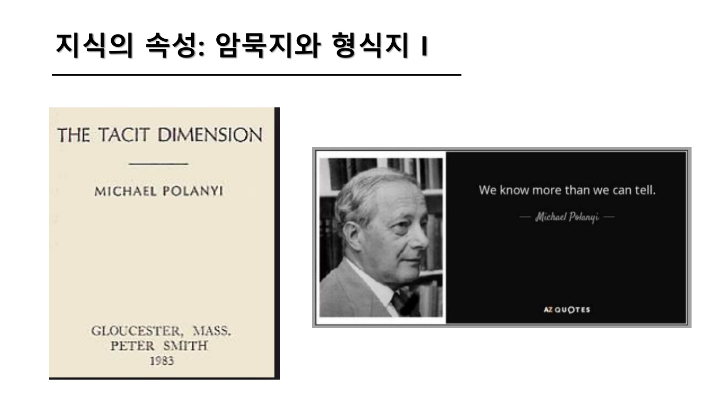
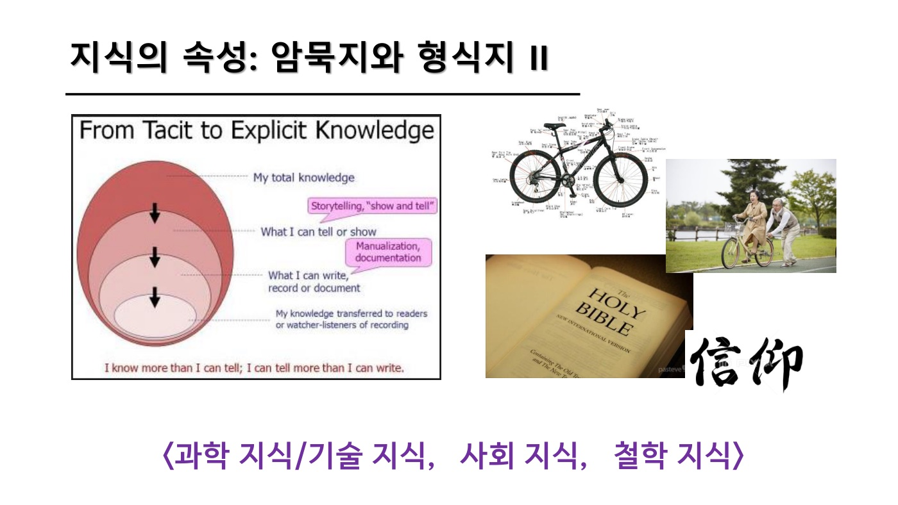
Polanyi 형제 — 🗣 한 쌍으로 소개된 이유
| Karl Polanyi (형, 사회학자) | Michael Polanyi (동생, 물리화학자) | |
|---|---|---|
| 대표작 | The Great Transformation | 암묵지(tacit knowledge) 개념 |
| 🗣 요지 | 19–20세기 서구가 시장 사회(임금노동 사회)로 변해 가는 과정. 경쟁에서 떨어지는 사람들이 생기면 사람들이 다시 롤백한다 | 실험 도구를 다루는 장인적 지식 — 말로 설명 못 하지만 "이렇게 하면 이렇게 된다"는 것이 있다 |
| 🗣 현재적 함의 | 세계화에서 탈락한 사람들의 "이건 아닌데" → 정치적 반동(트럼프). 글로벌 시장화의 위험성 | "We know more than we can tell." |
형제가 같이 나오는 이유: 형은 시장이 사회에서 떨어져 나갈 때의 위험을, 동생은 시장이 셀 수 없는 지식이 있다는 것을 말했다. 둘 다 "시장만으로는 안 된다"는 이 수업의 문제의식과 닿는다. → W02-1/07 조직화된 시장.
"우리는 우리가 말할 수 있는 것보다 훨씬 많이 알고 있죠. 자전거를 어떻게 타는지를 무슨 역학 어쩌고 해서 설명할 수는 있죠. 타보면 알죠. … 토탈 놀리지가 이만큼 있으면 그중에 일부를 내가 말할 수 있는 거고, 그중에 일부를 쓸 수 있는 거고, 그중에 일부를 다른 사람들한테 넘겨줄 수 있는."
42:22
시장은 형식지만 센다 ★
- 🗣 시장에서는 명시지밖에 카운팅이 안 된다. 그러나 실제 안에는 엄청나게 많은 암묵지가 있다. 그럼 이걸 어떻게 카운팅할 것인가.
- → 이 질문이 W02-1/04 Jensen et al.(2007)의 DUI 지표 7개로 이어진다. 세지 못하던 것을 세려는 시도.
- 🗣 신앙도 마찬가지 — 책에 있는 것과 경험했을 때 생기는 마음은 다르다.
🗣 "해 봐야 안다" — 교수가 꼽은 혁신의 한마디
"제가 혁신이나 이런 거에 대해서 얘기를 했을 때, 눈 감고 그걸 한마디로 줄이라 한다면 저는 '해봐야 안다', 한마디로 이걸로 줄일 겁니다. 해봐야 안다. 익스플리싯 놀리지 다 중요하죠. 근데 익스플리싯 놀리지도 해봐야 알아요. 지금 알파폴드도 나오고 AI도 나왔죠, 프롬프트 써봐요. 써보고 자기가 만들어 놔야 되는."
45:07
- 형식지조차 해 봐야 안다. AI 프롬프트도 써 보고 직접 만들어 봐야 한다. 암묵지는 계속 만들어지며 없어지지 않는다.
암묵지가 끊길 때 — 🗣 부울경의 위기
- 옛날에 깔아 놓은 산업 자산에 현장 숙련자들이 많은데, 은퇴하면 밑에서 이어받을 사람이 없다 → 그 일은 사라진다.
- 미국은 원자력을 자기들이 다 만들었지만 이제 못 짓는다. 배 짓는 나라는 중국과 한국뿐.
- AX 하면서 신규 직원을 안 뽑으면 암묵지가 끊길 수 있다. 어프렌티스십 등 암묵지를 이어 갈 시스템이 필요하다.
"그럼 그 일은 사라져. 왜냐하면 해본 사람이 별로 없으니까. 사실 미국에서 원자력 관련해서 못 지어요. 걔들이 다 만들었지만 산업 생태계가 무너지면 못 지어요. … 그 지식을 만만히 보면 안 돼. 제일 문제가 AX 되면서 신규 직원들 잘 안 뽑으려고 그러잖아요. 근데 그 암묵지가 끊길 수도 있어요."
46:10
- 🗣 휴머노이드는 이 암묵지 전체를 통째로 대체하겠다는 것. 피지컬 AI의 제일 문제는 데이터가 고르지 않다는 것 — 그래도 암묵지는 계속 나온다.
수업에서 나온 논점
- W02 Q4 (김예나, DUI 지표를 실제로 어떻게 측정하나) — 🗣 "암묵지가 충만한 환경에서 이것을 어떻게 명시화(codify)하고 핸들할 것인가"의 고민이라고 정리됨. 암묵지·형식지 구분이 곧 측정 문제로 이어진다. →
수업노트/W02 §6 Q4 - W02 Q2 (삼성 DX 참석자): DUI와 STI가 발견하는 혁신의 종류가 다르다. 현장은 "써 보니 문제가 있네" → 프로세스 혁신, STI는 "이런 기술이 발견됐네" → 기술 주도. 🗣 STI의 가장 혁혁한 모습은 원자폭탄 — 현장에서는 생각도 못 할 단절적(radical) 혁신.
보충 사례
- Michael Polanyi (1966) The Tacit Dimension: "우리는 사람의 얼굴을 알아보지만, 어떻게 알아보는지는 설명하지 못한다"가 원문의 대표 예시.
- Nonaka & Takeuchi (1995) The Knowledge-Creating Company: 암묵지↔형식지의 네 가지 전환(SECI: 사회화·외부화·종합화·내재화)으로 일본 기업의 지식 창출을 설명. 💡 수업에서 언급되지는 않았지만 "암묵지를 어떻게 코드화하나"라는 질문의 경영학 쪽 표준 답변이다.
- 조선업 숙련 단절: 💡 2016년 전후 수주 절벽으로 국내 조선 인력이 대거 이탈했고, 이후 수주가 회복되자 용접·도장 숙련공 부족이 병목이 됐다. 🗣 "그 일은 사라진다"의 실제 사례.
수업 프레임에서의 위치
- 이 주차 전체의 출발 개념. 암묵지가 있기 때문에 학습(W02-1/02)이 필요하고, 암묵지 중심 학습이 DUI(W02-1/03)이며, 암묵지를 코드화하는 것이 Mokyr의 Ω(W02-1/05)다.
- W01/03의 "학습하는 인간"을 지식의 성질 쪽에서 받는다.
- W02-2/03(Callon)과 직결: 논문을 공개해도 숙련된 사람·장비·표준이 없으면 지식이 재현되지 않는다 — 형식지만으로는 부족하다는 같은 주장의 공공성 버전.
관련 개념 · 논문
- Polanyi, M. — 🗣 암묵지. "We know more than we can tell."
- Polanyi, K. (1944) The Great Transformation — 🗣 시장 사회와 롤백.
- 연결: W02-1/02 학습 · W02-1/03 STI/DUI · W02-1/05 Mokyr Ω와 λ · W02-1/08 생산능력 vs 기술역량 · W01/03
예상 퀴즈 포인트
-
1
서술형암묵지와 형식지를 구분하고 Polanyi의 명제("We know more than we can tell")가 뜻하는 바를 예시로 설명하라.
-
2
서술형"시장에서는 명시지밖에 카운팅이 안 된다"는 말의 함의는 무엇이며, 이 문제를 해결하려는 시도로 무엇이 있는가? (→ Jensen et al.의 DUI 지표)
-
3
서술형교수가 혁신을 한마디로 "해 봐야 안다"로 요약한 이유를 암묵지 개념으로 서술하라. 형식지도 해 봐야 안다는 말은 무슨 뜻인가?
-
4
서술형암묵지의 단절이 산업에 미치는 영향을 사례(원자력, 조선)로 설명하고, AX 시대에 그것이 왜 위험한지 논하라.
학습 — 지식생산의 미시적 기초
Learning as the Micro-foundation of Knowledge Production — Learning as micro-foundation
출처
리딩
- Lundvall (1992) National Systems of Innovation
- Lundvall (2016) The Learning Economy and the Economics of Hope ★PDF 보유
수업노트
- 수업노트/W02_강의기록_260912.md §2-1 [30:21–34:00]
- 수업노트/W02_강의기록_260912.md §3-1 [48:54–50:03]
한 줄 정의
혁신이 "값어치 있는 지식을 만드는 일"이라면, 그 지식은 어디서 오는가? 학습에서 온다. 그리고 학습의 기본 메커니즘은 혼자 머리를 쥐어짜는 것이 아니라 주고받는 상호작용(interaction)이다. 게다가 학습은 쌓이는 것(축적)이라 시간이 걸리고 돈으로 살 수 없다. 그 대가로, 한 번 쌓인 것은 버리기도 어렵다(unlearning의 어려움 = 고착).
쉽게 말하면
🗣 교수가 쓴 비유가 최고다. 강의를 들으면 "새롭네" 할 수는 있다. 그런데 그게 진짜 내 것이 되는 순간은 뒤풀이에서다. 친구가 "야 그건 아닌 것 같은데" 하고, 내가 "아니야 그거야" 하고 받아치면서 지식이 내 것이 된다.
그리고 학습은 근육과 같다. 하루 만에 안 붙고(축적, 만 시간), 남의 근육을 사 올 수 없으며(구매로 안 됨), 한 번 붙은 자세는 고치기 어렵다(unlearning).
핵심 내용
📄 슬라이드 (W02 p9, p12)
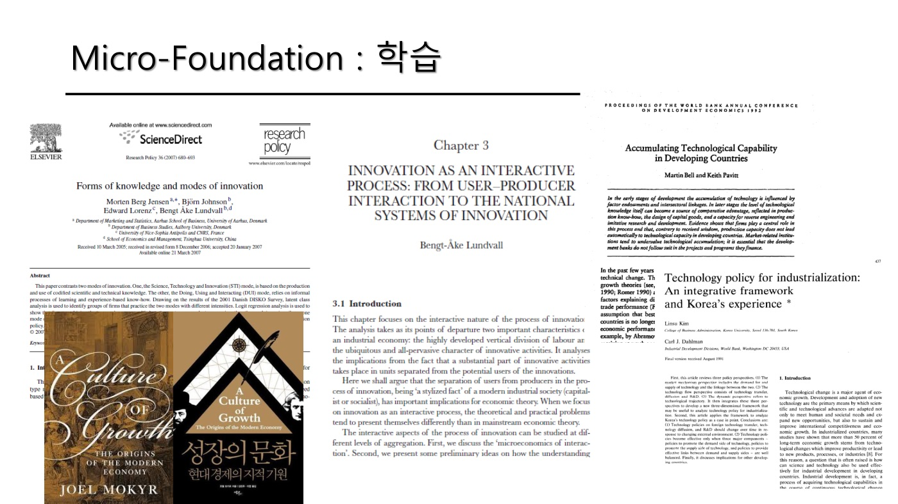
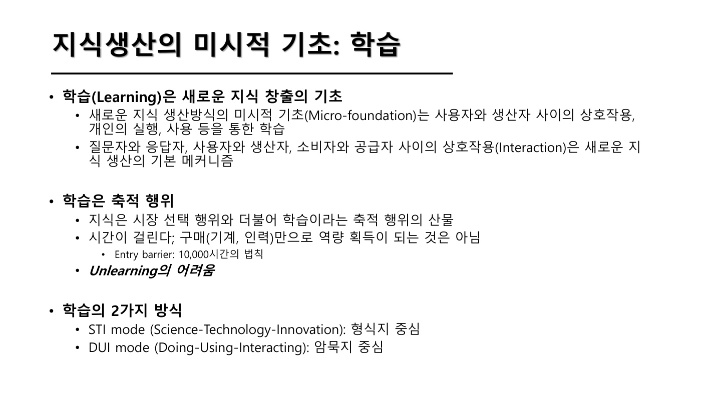
상호작용이 기본 메커니즘 — Lundvall
- 🗣 Lundvall(덴마크 Aalborg): 사회를 구조적으로 보는 입장. 핵심 발견은 innovation은 interactive process라는 것.
- 🗣 새 지식은 주고받는 상황에서 나오지 혼자 팍 나오는 게 아니다.
"새로운 지식은 주고받는 상황에서 나오는 것이지 혼자 팍팍 나오는 게 아니에요. 제 말을 듣고 '이거 새롭네' 할 수도 있어요. 근데 그게 진짜 자기 거가 되는 순간은, 뒤풀이에서 헛소리하는 친구가 '야 그건 아닌 것 같은데' 하고, '아니야 그거야' 하고, 그렇게 인터랙션 할 때."
31:48
- 🗣 그리고 사실 이것이 시장에서 벌어지는 일이다. → 이를 경제활동의 생산자–사용자 관계로 확장한 것이 국가혁신체제(NIS) 논의. → W02-1/07.
학습경제(learning economy)와 learnfare
- 🗣 1990–2000년대 유럽에서 학습경제로 크게 유행. 제3의 길도 결국 이 얘기.
- 🗣 실업급여를 그냥 주는 대신 배움과 연결해 돈을 주자 → welfare에서 learnfare(학습 복지).
- 즉 학습은 개인의 미덕이 아니라 경제·복지 정책의 설계 원리가 된다. Lundvall(2016) The Learning Economy and the Economics of Hope가
참고자료/에 있다.
학습은 축적 행위 ★
"학습은 축적이 됩니다. 쌓이는 겁니다. 한 번 해서 되는 게 아니라 어큐뮬레이션이 쭉 되는 거. 시간이 걸리고, 구매만으로는 역량이 되는 것이 아니고. 만 시간 뭐 이런 것들 있죠. 그러니까 거꾸로, 따라서 언러닝이 어려운 거죠. 몸에 익숙한 게 잘 안 바뀝니다. 언러닝이, 고착이 되는 거죠."
48:54
- → "구매만으로는 역량이 안 된다"는 W02-1/08 Bell & Pavitt의 생산 능력 vs 기술 역량으로 곧장 이어진다. 설비는 사 올 수 있지만 역량은 못 산다.
unlearning의 어려움 = 고착 ★
- 🗣 몸에 익은 것이 잘 안 바뀐다 → 학습이 곧 고착이 된다.
- → W01/05의 세 가지 고착과 직결. 학습의 장점(축적)과 단점(고착)은 같은 성질의 양면이다.
- → W02-1/12 Discussion: "DUI mode는 path-dependency로 lock-in될 가능성이 높다 — 돌파 방안은?"
📄 학습의 2가지 방식
- STI mode (Science-Technology-Innovation): 형식지 중심
- DUI mode (Doing-Using-Interacting): 암묵지 중심 → W02-1/03에서 상세히.
수업에서 나온 논점
| W02 §4-4 조직화된 시장 | 순수 시장은 가격 신호만 오간다고 보지만, 실제 시장은 훨씬 많이 주고받는다. 학습이 일어나는 곳이 곧 시장이라는 주장. → W02-1/07. |
|---|---|
| W02 §5-5 | 🗣 몸으로 아는 것을 남과 공유하려면 말과 글로 써야 하고, 그때 과학적 지식(로직)이 들어온다. "점집 스타일은 옮길 수 없다." → 학습의 축적이 전파되려면 코드화가 필요하다. |
| W02 보충 [1:06:09] | 🗣 현장에 계신 분들은 더 잘 안다. 해 봐야 아는 것만 가지고 가면 안 되고 성찰적인 것, 메타 인지도 필요하다. 그 메타 인지를 얻으려고 학교에 와서 듣는 것. → DUI만으로는 부족하다는 예고. |
보충 사례
| 10,000시간의 법칙 | Ericsson의 의도적 연습(deliberate practice) 연구를 Gladwell이 대중화한 것. 💡 원 연구자는 "시간만 채우면 된다"는 해석을 비판했다 — 중요한 것은 피드백이 있는 연습이라는 점인데, 이는 오히려 "상호작용이 학습의 핵심"이라는 Lundvall의 주장과 통한다. |
|---|---|
| Learnfare | 💡 덴마크의 flexicurity 모델(유연한 해고 + 두터운 실업급여 + 적극적 재훈련)이 대표적. 해고는 쉽게 하되 재교육으로 다시 시장에 넣는다. Lundvall이 덴마크 학자라는 점과 연결된다. |
| 학습 = 고착의 사례 | 💡 코닥은 필름 시대의 학습(화학·인화 네트워크)이 너무 잘 축적되어 있어서, 자사가 먼저 만든 디지털카메라를 밀지 못했다. 축적이 곧 족쇄가 된 전형. |
수업 프레임에서의 위치
- W01/01에서 정의한 혁신("값어치 있는 지식을 만드는 활동")의 미시적 작동 원리.
- W01/03의 "학습하는 인간"을 한 주 분량으로 확장한 것.
- 학습의 두 얼굴(축적 ↔ 고착)이 이 강의 전체의 긴장을 만든다: 고착(W01/05)을 어떻게 깰 것인가 = 시스템 전환론(W10~W13).
- 상호작용 → 사용자-생산자 관계 → NIS로 이어지는 경로는 W01/09 계보의 Innovation Studies 줄기 그 자체다.
관련 개념 · 논문
- Lundvall (1992) National Systems of Innovation — 상호작용 학습을 NIS의 기초로.
- Lundvall (2016) The Learning Economy and the Economics of Hope — ★
참고자료/PDF 보유. - 연결: W02-1/01 암묵지와 형식지 · W02-1/03 STI/DUI · W02-1/07 사용자–생산자 상호작용 · W01/05 세 가지 고착
예상 퀴즈 포인트
-
1
서술형"학습이 지식 생산의 미시적 기초"라는 말의 뜻을 상호작용(interaction) 개념으로 설명하라.
-
2
서술형학습이 축적 행위라는 것의 함의 세 가지를 쓰라. (시간이 걸린다 / 구매로 안 된다 / unlearning이 어렵다)
-
3
서술형학습의 축적과 고착(lock-in)이 왜 같은 성질의 양면인지 설명하라.
-
4
서술형학습경제(learning economy)와 learnfare 개념을 설명하고, 이것이 복지 정책과 어떻게 연결되는지 서술하라.
STI mode vs DUI mode
Science-Technology-Innovation mode vs Doing-Using-Interacting mode (Jensen et al. 2007) — 학습의 두 방식 — Jensen et al. (2007)
출처
리딩
- Jensen, Johnson, Lorenz & Lundvall (2007) Forms of knowledge and modes of innovation, Research Policy ★Core Reading
수업노트
- 수업노트/W02_강의기록_260912.md §3-2 [50:03–50:57]
- 수업노트/W02_강의기록_260912.md §6 Q2 [2:02:50–2:10:00]
한 줄 정의
배우는 방식은 크게 둘이다. STI 모드는 과학의 원리로 배우는 것(강의·논문·R&D, 형식지, 과학자 중심)이고, DUI 모드는 해 보면서 배우는 것(현장·토론·고객과의 협업, 암묵지, 장인·엔지니어 중심)이다. 둘 중 하나가 옳은 게 아니라, 둘을 결합한 기업이 압도적으로 혁신을 잘한다는 것이 이 이론의 결론이다.
쉽게 말하면
요리를 배우는 두 가지 길이다.
- STI: 조리 과학 책을 읽고 "마이야르 반응은 140도 이상에서 일어난다"를 안다. 왜 그런지(know-why)를 안다.
- DUI: 주방에서 3년 굽는다. 고기 냄새와 소리로 뒤집을 때를 안다. 어떻게 하는지(know-how)를 안다.
책만 읽은 사람은 실제로 태워 먹고, 주방에만 있던 사람은 새 재료가 오면 응용을 못 한다. 둘 다 한 사람이 제일 세다 — 그게 Jensen et al.의 실증 결과다.
🗣 교수의 표현: "현장에서 일하는 사람들하고 연구실에서 일하는 사람들하고 계속 얘기를 하는 거야."
핵심 내용
📄 슬라이드 (W02 p13–14)
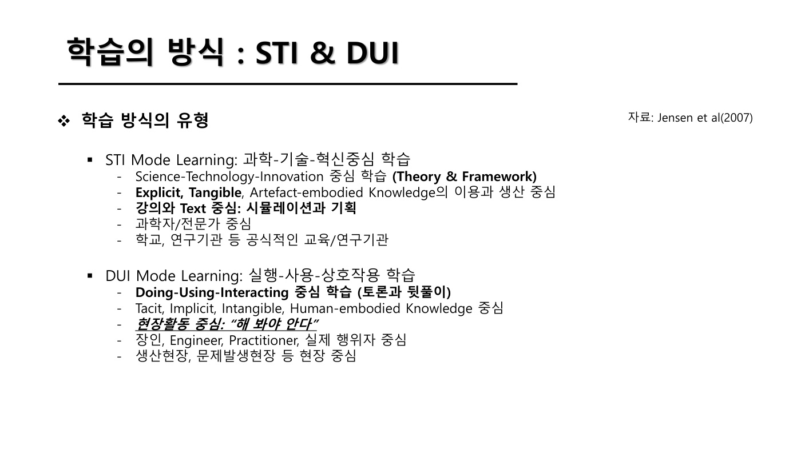
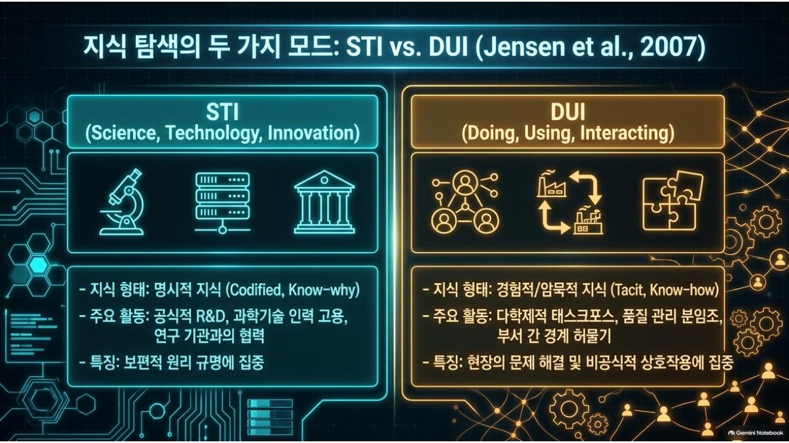
두 모드 비교 ★ (퀴즈 핵심)
| STI mode | DUI mode | |
|---|---|---|
| 풀네임 | Science–Technology–Innovation | Doing–Using–Interacting |
| 지식 형태 | 형식지 (Explicit, Tangible, Artefact-embodied), Codified, Know-why | 암묵지 (Tacit, Implicit, Intangible, Human-embodied), Know-how |
| 주요 활동 | 공식적 R&D, 과학기술 인력 고용, 연구기관과의 협력 | 다학제 태스크포스, 품질 분임조, 부서 간 경계 허물기 |
| 학습 방식 | 강의와 텍스트 중심, 시뮬레이션과 기획 | 현장활동 중심, "해 봐야 안다" |
| 주체 | 과학자·전문가 | 장인, Engineer, Practitioner, 실제 행위자 |
| 장소 | 학교, 연구기관 등 공식 교육·연구기관 | 생산현장, 문제발생현장 |
| 특징 | 보편적 원리 규명에 집중 | 현장의 문제 해결 및 비공식적 상호작용에 집중 |
| 🗣 한마디 | 이론과 프레임워크 | 떠들고 토론하고 뒤풀이 |
🗣 두 모드를 잇는 것이 핵심
"아주 쉽게 얘기하면 현장에서 일하는 사람들하고 연구실에서 일하는 사람들하고 계속 얘기를 하는 거야. '야 이거 뭐가 문제냐' 그랬더니 연구실에서 일하는 사람들은 그걸 프레임워크로 볼 거 아니에요. 그래서 어떻게 벌어지는지를 막 모색을 할 거잖아요. 그러면 다른 현장에도 얘기해 줄 수 있죠."
53:29
→ 핵심은 전파 가능성이다. 현장의 문제를 연구실이 프레임워크로 번역하면, 그 해법을 다른 현장에도 옮길 수 있다. DUI 혼자서는 그 현장에 갇힌다.
두 모드가 발견하는 혁신의 종류가 다르다 (W02 토론에서 정리)
- 삼성 DX 참석자: DUI는 "써 보니 문제가 있네, 어떻게 해결하지" → 프로세스·문제해결 혁신. STI는 "이런 기술이 발견됐네, 이걸로 뭘 해결하지" → 기술 주도 혁신. 우열이 아니라 다른 종류.
- 🗣 그것이 명시지·STI의 장점. STI의 가장 혁혁한 모습은 원자폭탄 — 과학자에게 맡겼더니 원자를 쪼개 폭발력을 쓰는, 현장에서는 생각도 못 할 단절적(radical) 혁신을 가져왔다.
- → 점진적(incremental) vs 급진적(radical) 혁신의 구분과 대응한다.
| DUI | STI | |
|---|---|---|
| 혁신의 종류 | 점진적(incremental), 프로세스·문제해결 | 급진적(radical), 기술 주도 |
| 출발점 | "써 보니 문제가 있다" | "이런 기술이 발견됐다" |
| 대표 예 | 현장 공정 개선 | 원자폭탄 |
DUI의 약점 — 🗣 lock-in
- 🗣 (W02 Discussion) DUI mode는 path-dependency로 lock-in될 가능성이 높다 — 새로운 세계를 못 볼 수 있다. 돌파 방안은?
- W02-1/02에서 본 대로 학습은 축적이자 고착이다. 현장 학습은 그 현장의 방식을 강화한다.
- 🗣 그래서 메타 인지가 필요하고, 그것을 얻으려고 학교에 온다.
STI의 약점 — 🗣 산업이 과학을 끌고 가야 한다
- 🗣 사람들이 "그럼 STI에 투자하면 되겠네"라고 생각하는 것이 문제. 산업이 과학을 끌고 가야지, 무조건 과학기술을 푸시한다고 산업이 되는 게 아니다.
- → W02-1/06 불만족스러운 혁신으로 이어짐.
수업에서 나온 논점
- W02 Q2 (곽현우): 새로운 위험·기회는 누가 먼저 발견하나 — DUI(현장) vs STI(연구)?
- 질문 배경: DUI가 고착될 수 있다면 STI가 새것을 더 발견하나? 현장 사람들은 연구원들이 고리타분한 것을 들고 온다고 느낀다.
- 김재원(SK지오센트릭): 석유화학 에틸렌 — 중국이 2018–19년 60% 수입에서 거의 100% 자립으로 전환. 중국 성장에 붙어 컸다가 중국이 치고 나가 막힌 대표 산업. 위험은 다들 예측했지만 회사가 당장 단맛을 누리고 있으면 대비가 안 된다. 오너와 전문경영인이 따로면 더 안 된다.
- 🗣 "DUI하고 전혀 맥락이 다른 얘기가 나왔어요. 근데 되게 맞는 얘기잖아." → 거버넌스·소유구조라는 제3의 변수. →
수업노트/W02 §6 Q2
- W02 Q4 (김예나): DUI 지표를 실제로 어떻게 측정하나 → W02-1/04.
보충 사례
- 논문 원제: Jensen, Johnson, Lorenz & Lundvall (2007) "Forms of knowledge and modes of innovation", Research Policy 36(5). 🗣 교수가 "논문을 읽어 보라"고 직접 권한 W02의 Core Reading이다.
- 한국 맥락의 적용: 전통 제조업(조선·철강)은 DUI가 강하고 STI가 약하며, 바이오·반도체 설계는 STI가 강하고 DUI가 약할 수 있다. 🗣 W02 §5-5의 처방이 정확히 이것 — "하이테크는 STI에 DUI 결합, 전통 제조업은 DUI에 STI 결합."
- 왜 결합이 시너지인가: DUI는 문제를 발견하고 STI는 그 문제를 일반화한다. 일반화되면 다른 현장으로 이전되고, 이전된 곳에서 또 새 문제가 발견된다. 순환이 돌기 시작하는 것이 결합 모드의 정체다.
수업 프레임에서의 위치
- W02-1/01(암묵지·형식지)이 지식의 성질이라면, STI/DUI는 그 지식을 얻는 방식이다. 일대일로 대응한다.
- W02-1/04가 이 구분의 실증이고, W02-1/05–06이 두 모드의 이론적 긴장(Mokyr vs Lundvall)이다.
- W02-1/09 후발국 역방향 궤적은 "DUI 먼저, STI 나중"이라는 한국의 경로를 설명한다.
- 퀴즈 비교형 단골 주제. W01의 세 가지 고착과 엮어 "DUI의 lock-in"을 묻는 문제가 나올 수 있다.
관련 개념 · 논문
- Jensen et al. (2007) — ★Core Reading. 🗣 읽어 보라고 직접 권함.
- 연결: W02-1/01 · W02-1/02 · W02-1/04 Jensen 실증 · W02-1/06 불만족스러운 혁신 · W02-1/12 종합
예상 퀴즈 포인트
-
1
비교형★ STI mode와 DUI mode를 지식 형태·주체·장소·학습 방식의 네 기준으로 비교하라.
-
2
비교형두 모드가 발견하는 혁신의 종류가 어떻게 다른가? (점진적 vs 급진적, 원자폭탄 예시)
-
3
서술형DUI mode가 path-dependency로 lock-in되는 이유를 학습의 축적 개념으로 설명하고, 돌파 방안을 논하라. (Discussion 문제)
-
4
서술형"현장과 연구실이 계속 얘기하는 것"이 왜 중요한가 — 전파 가능성(다른 현장으로의 이전) 관점에서 서술하라.
-
5
비교형비교형: 암묵지/형식지(W02-1/01)와 DUI/STI의 대응 관계를 설명하라.
Jensen et al. (2007) 실증 연구 — DISKO 데이터와 4개 클러스터
Empirical Evidence — DISKO data, Latent Class Analysis, Logistic Regression — DISKO 데이터 · 4개 클러스터 · 결합 모드의 압도적 시너지
출처
리딩
- Jensen et al. (2007) Research Policy ★Core Reading — 교수가 직접 읽으라고 권함
수업노트
- 수업노트/W02_강의기록_260912.md §3-3 [50:57–54:42]
- 수업노트/W02_강의기록_260912.md §6 Q4 [2:21:18–2:27:52]
한 줄 정의
STI와 DUI가 말만 그럴듯한 게 아니라는 것을 덴마크 기업 692개 데이터로 증명한 연구다. 각 모드를 지표로 세어(DUI 7개, STI 3개) 기업을 네 유형으로 나눴더니, 두 모드를 함께 쓰는 기업이 신제품 출시에 성공할 확률이 압도적으로 높았다.
쉽게 말하면
"책도 보고 주방에도 서는 요리사가 제일 낫다"는 말을 숫자로 증명한 것이다.
아무것도 안 하는 식당을 기준(1배)으로 놓으면,
- 주방 경험만 쌓은 식당: 약 2배
- 조리 과학만 공부한 식당: 약 3배
- 둘 다 하는 식당: 약 8배
그런데 여기서 반전이 있다. 식당의 업종과 규모를 감안해서 다시 계산하니 "과학만 공부한 식당"의 3배가 2.4배로 확 줄었다. 알고 보니 그 식당들은 원래 고급 레스토랑(하이테크 업종)이라 잘했던 것. 반면 둘 다 하는 식당은 감안 후에도 5배로 살아남았다.
핵심 내용
📄 슬라이드 (W02 p15–18)
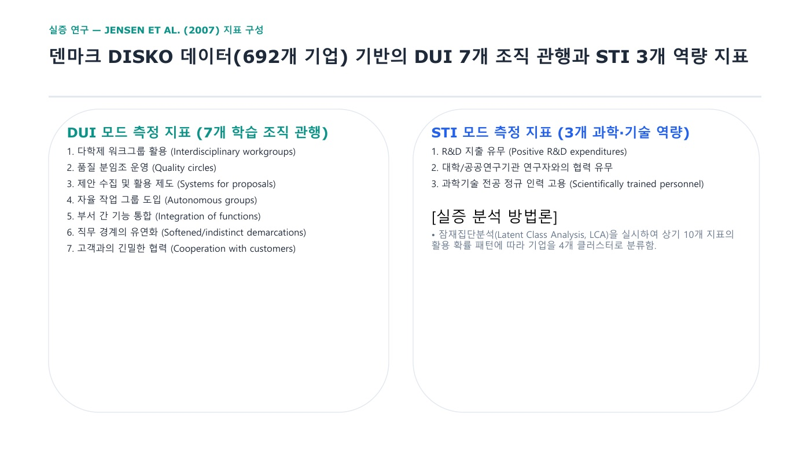
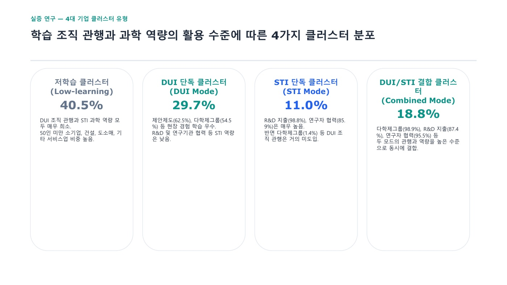
데이터와 방법
- 🗣 핵심은 현장에서 일어나는 학습의 모습을 지표화한 것. → W02-1/01의 "시장에서는 명시지밖에 카운팅이 안 된다"는 문제에 대한 대답.
지표 ★ (🗣 교수가 "일부러 이 슬라이드를 넣었다"고 한 부분)
DUI 모드 측정 지표 — 7개 학습 조직 관행
- 다학제 워크그룹 활용 (Interdisciplinary workgroups)
- 품질 분임조 운영 (Quality circles)
- 제안 수집 및 활용 제도 (Systems for collecting proposals)
- 자율 작업 그룹 도입 (Autonomous groups)
- 부서 간 기능 통합 (Integration of functions)
- 직무 경계의 유연화 (Softened/indistinct demarcations)
- 고객과의 긴밀한 협력 (Cooperation with customers)
STI 모드 측정 지표 — 3개 과학·기술 역량
- R&D 지출 유무 (Positive R&D expenditures)
- 대학/공공연구기관 연구자와의 협력 유무
- 과학기술 전공 정규 인력 고용 (Scientifically trained personnel)
DUI 지표는 전부 조직 관행(how we work)이고, STI 지표는 전부 투입 자원(what we have)이다. 암묵지는 관행으로, 형식지는 자원으로 측정된다는 점이 설계의 핵심.
4개 클러스터 📄
| 클러스터 | 비중 | 특징 |
|---|---|---|
| 저학습 (Low-learning) | 40.5% | DUI·STI 모두 매우 희소. 50인 미만 소기업, 건설·도소매·기타 서비스업 비중 높음 |
| DUI 단독 | 29.7% | 제안제도 62.5%, 다학제그룹 54.5% 등 현장 학습 우수. R&D·연구기관 협력 낮음 |
| STI 단독 | 11.0% | R&D 지출 98.8%, 연구자 협력 85.9%로 매우 높음. 반면 다학제그룹 1.4%로 DUI 관행 거의 미도입 |
| DUI/STI 결합 | 18.8% | 다학제그룹 98.9%, R&D 지출 87.4%, 연구자 협력 95.5% — 두 모드를 높은 수준으로 동시 결합 |
주목할 점: 기업의 40%는 아무 학습도 안 한다. 그리고 STI 단독(11%)이 DUI 단독(29.7%)보다 훨씬 드물다 — 현장 학습이 더 흔하고 과학 역량이 더 희소하다.
로지스틱 회귀 결과 ★ (퀴즈 숫자)
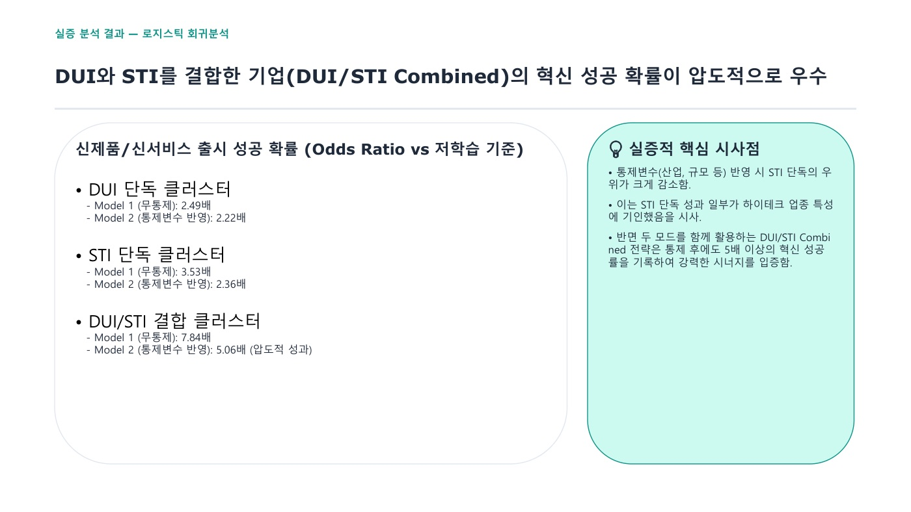
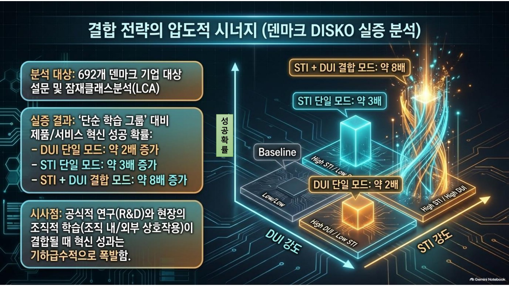
신제품·신서비스 출시 성공 확률 (Odds Ratio, 저학습 클러스터 기준)
| 클러스터 | Model 1 (무통제) | Model 2 (통제변수 반영) |
|---|---|---|
| DUI 단독 | 2.49배 | 2.22배 |
| STI 단독 | 3.53배 | 2.36배 (크게 감소) |
| DUI/STI 결합 | 7.84배 | 5.06배 |
- 통제변수(산업, 규모 등) 반영 시 STI 단독의 우위가 크게 감소한다.
- 이는 STI 단독의 성과 일부가 하이테크 업종 특성에 기인했음을 시사한다.
- 반면 결합 전략은 통제 후에도 5배 이상을 기록해 강력한 시너지를 입증했다.
이 "통제 후 STI 단독의 하락"이 이 논문에서 가장 중요한 발견이다. "R&D만 하면 된다"는 통념을 데이터로 흔든 것 — W02-1/06 Lundvall의 경고와 직결된다.
🗣 지표의 한계와 "치고 들어가기" — W02 Q4
- 김예나 질문: DUI 지표가 리스트업은 되어 있는데 실제 조직에서 어떻게 취합·측정하나? 실무에서는 레인지가 넓어 같은 "예스"라도 사람마다 파악 정도가 다르고, O/X 설문이 현실적이지 않은 경우를 많이 봤다.
- 🗣 교수: 대부분 지표는 O/X이고 몇 회 활용하는지까지는 안 들어갔을 것. 그런데 그걸 보고 더 치고 들어갈 수 있다.
"그러면 그거 보시고서 여기 더 치고 들어갈 수 있어요. 예를 들어서 워크그룹 활용을 일주일에 한 번 했냐 한 달에 한 번 했냐. 그런 식으로 이걸 더 치고 들어가서 질문을 만들어서 그걸 가지고 물어보고 그걸 찾아내는 게 논문이 되는 거죠. 근데 이거 가지고는 현상을 설명할 수가 없다, 그러면 그 인디케이터를 더 만들면 되죠. … 그냥 DUI 모드가 좋다는 얘기만 하지 말고 실제로 어떻게 했는지 찾아야 돼."
2:22:37
- 🗣 2007년 논문이니 2000년대 중반 설문. 한국은 워낙 빨리·열심히 일해서 현장(삼성 등)에서 이런 것을 더 많이 할 것.
- 🗣 결론: 암묵지가 충만한 환경에서 이것을 어떻게 명시화(codify)하고 핸들할 것인가.
★ Term paper 후보: 🗣 교수가 이 대목에서 "그게 논문이 된다"고 직접 말했다. DUI 지표를 한국 기업 현장에 맞게 재구성·측정하는 연구. (수업노트 정제 노트에도 term paper 후보로 표시됨)
수업에서 나온 논점
- 투자회사 참석자 (Q4 이어서): 투자회사는 체크리스트가 아니라 아이디어에서 시작해 토의하고 집단지성으로 결정 + 의사결정자 설득. 형식적 지표와 의사결정자의 허들을 넘기는 설득 둘 다 중요. 스타트업 투자는 담당자 1명이 오케스트레이션, 상장사 이상은 팀플레이 — 소싱도 개인 역량보다 조직(브랜드) 역량. 단계에 따라 조직/개인 역할이 다르다.
보충 사례
- DISKO: 덴마크의 "Danish Innovation System in a Comparative Perspective" 설문 프로젝트. Lundvall이 주도한 Aalborg 학파의 데이터 기반.
- Latent Class Analysis 💡: 직접 관측되지 않는 잠재적 유형(여기서는 "학습 모드")이 있다고 가정하고, 관측된 응답 패턴으로 각 개체가 어느 유형에 속할 확률을 추정하는 방법. 미리 정한 기준으로 자르는 게 아니라 데이터가 유형을 드러내게 한다는 점이 클러스터 분석과의 공통점.
- Odds Ratio 읽는 법 💡: "5.06배"는 확률이 5배라는 뜻이 아니라 승산(odds)이 5배라는 뜻이다. 성공 확률이 낮은 구간에서는 확률비와 비슷하게 읽어도 무방하지만, 엄밀히는 다르다. 퀴즈에서 "확률이 5배"라고 쓰면 감점 소지가 있으니 "성공 승산이 약 5배"로 쓰는 편이 안전하다.
수업 프레임에서의 위치
- W02-1/03(STI/DUI 구분)의 실증적 근거. 이 데이터가 없으면 STI/DUI는 그냥 분류일 뿐이다.
- W02-1/12(종합)의 "두 모드를 결합하라"는 처방이 여기서 나온다.
- 🗣 교수가 지표 슬라이드를 일부러 넣은 이유는 측정 가능성을 보여 주기 위해서다. 암묵지는 셀 수 없다는 통념(W02-1/01)에 대한 반례.
- Term paper와 직접 연결되는 유일한 개념 파일. 관심 있으면 여기서 출발.
관련 개념 · 논문
- Jensen, Johnson, Lorenz & Lundvall (2007) — ★Core Reading. Research Policy 36(5) 680–693.
- 연결: W02-1/03 STI/DUI · W02-1/01 암묵지와 형식지 · W02-1/06 불만족스러운 혁신 · W02-1/12 종합
예상 퀴즈 포인트
-
1
비교형★ Jensen et al.(2007)의 DUI 지표와 STI 지표를 각각 서술하고, 두 지표군의 성격 차이를 설명하라. (조직 관행 vs 투입 자원)
-
2
비교형★ 네 클러스터의 이름과 대략적 비중을 쓰고, 각 클러스터의 혁신 성공 승산을 비교하라.
-
3
서술형★ 통제변수 반영 시 STI 단독의 우위가 크게 감소한 것이 무엇을 시사하는가?
-
4
서술형이 연구의 방법론적 한계(O/X 측정)를 지적하고, 이를 개선할 방안을 제시하라. (수업 Q&A 응용)
-
5
서술형응용: 자신이 속한 조직을 DUI 7개 지표로 평가하면 어느 클러스터에 해당하는가?
Mokyr의 지식 프레임 — Ω와 λ
Propositional (Ω) and Prescriptive (λ) Knowledge; Access Costs (Mokyr) — 왜 산업혁명은 영국에서 일어났는가
출처
리딩
- Mokyr (2002) The Gifts of Athena
- Mokyr (2016) A Culture of Growth
수업노트
- 수업노트/W02_강의기록_260912.md §2-2 [34:00–37:54]
- 수업노트/W02_강의기록_260912.md §4-1 [54:42–56:58]
한 줄 정의
경제사학자 Joel Mokyr는 지식을 둘로 나눈다. λ(람다) = 처방적 지식, 장인의 노하우("이렇게 하면 된다", know-how). Ω(오메가) = 명제적 지식, 과학자의 원리 지식("왜 그렇게 되는가", know-why). 산업혁명이 영국에서 일어난 이유는 과학자들이 장인의 노하우를 코드화(codify)해서, 그 지식을 배우는 비용(access cost)이 급격히 싸졌기 때문이다.
쉽게 말하면
옛날에 김치 담그는 법을 배우려면 할머니 옆에 몇 년을 붙어 있어야 했다. 게다가 안 가르쳐 주신다. 이것이 λ, 그리고 높은 접근 비용이다.
그런데 누군가 "배추의 삼투압과 유산균 발효는 이런 원리다"라고 원리를 밝혀 책으로 쓰면(Ω), 이제는 책 한 권으로 배울 수 있다. 접근 비용이 급락한다. 게다가 원리를 알면 배추가 아닌 다른 재료에도 응용할 수 있다.
🗣 교수: "그 코스트가 엄청 높았는데, 과학자들이 얘네들의 지식을 코디파이 하니까 이걸 배우면 훨씬 코스트가 싸졌다는 얘기예요. 그래서 산업혁명이 일어났다."
핵심 내용
📄 슬라이드 (W02 p19–20)
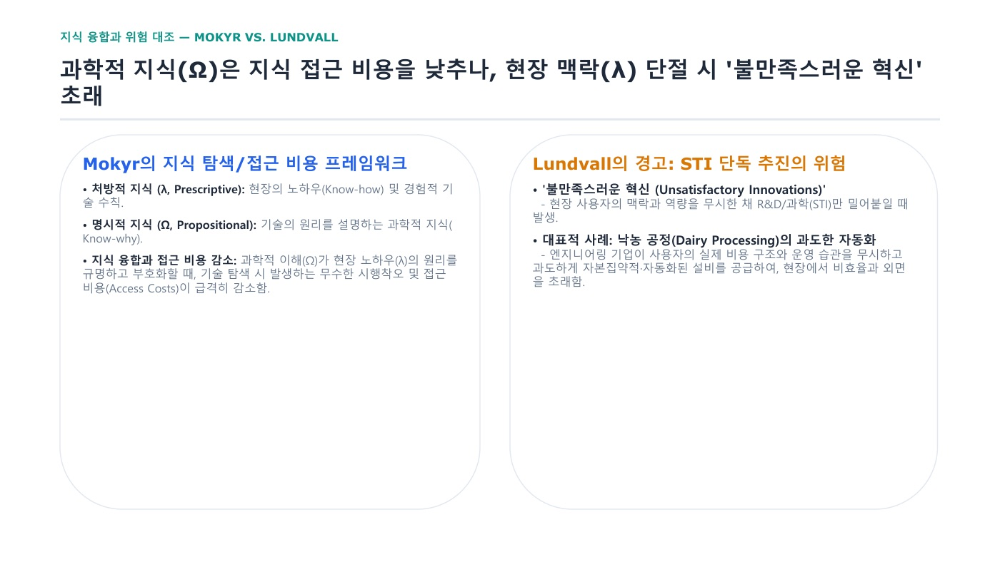
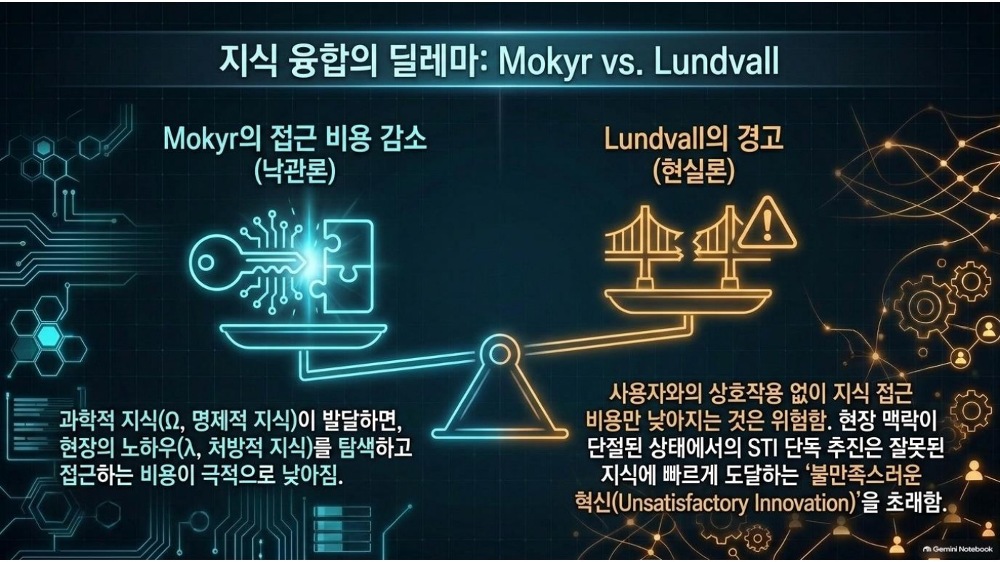
두 종류의 지식 ★
| λ (람다) 처방적 지식 | Ω (오메가) 명제적 지식 | |
|---|---|---|
| 영어 | Prescriptive knowledge | Propositional knowledge |
| 내용 | 현장의 노하우, 경험적 기술 수칙 | 기술의 원리를 설명하는 과학적 지식 |
| 질문 | Know-how ("이렇게 이렇게 하면 됩니다") | Know-why (왜 그렇게 되는가) |
| 주체 | 장인 | 과학자 |
| 대응 | 암묵지, DUI | 형식지, STI |
코드화 → 접근 비용 감소 → 산업혁명 ★
"옛날에 장인들이 하는 지식을 알려면 옆에 가서 보고 배워야 되잖아요. 그럼 안 가르쳐 주지. 그 코스트가 엄청 높았는데, 과학자들이 얘네들의 지식을 코디파이 하니까 이걸 배우면 훨씬 코스트가 싸졌다는 얘기예요. 그래서 산업혁명이 일어났다."
36:39
- 🗣 특허도 같은 논리: 안 가르쳐 주는 대신 코드화해서 공개하고 몇 년간 보호해 준다. Newton 등이 코드화의 역할을 했다.
- 🗣 즉 Mokyr는 명시적 지식을 만드는 그룹에 무게를 둔다. 성장의 문화(A Culture of Growth) = 코드화하는 사람들이 많이 생기는 것.
🗣 영국의 지리적·산업적 조건 (W02 §4-1)
Mokyr의 설명에 교수가 덧붙인 현장 배경:
- 영국 북부(맨체스터·리버풀·셰필드)는 우리로 치면 부산·경남 같은 곳.
- Peak District의 선상지에 비가 많이 와 수차(물레방아) 공장이 많았다.
- 면직물 원료는 미국 식민지 조지아의 목화 → 리버풀로 → 면직물로 만들어 수출. 맨체스터엔 아직도 그 공장 건물들이 있다.
- 석탄도 많아 증기기관으로 이어짐.
- 🗣 결론: 산업이 있고, 거기에 과학을 끌어다 쓴 것. 산업은 계속 있었지만 명시적 지식을 만드는 그룹이 없었는데, 이들이 등장하면서 산업혁명이 시작됐다.
이 마지막 문장이 중요하다. Ω가 먼저가 아니라 λ(산업)가 먼저 있었다. 그래서 다음 개념(W02-1/06 Lundvall의 경고)으로 자연스럽게 넘어간다.
🗣 이 논리를 한국에 적용한 사람들
- Martin Bell & Keith Pavitt (SPRU, 교수의 유학처. 제자 중 한국인이 많음) → W02-1/08.
- Linsu Kim(김인수) (고려대, Imitation to Innovation) — 한국이 왜 성공했는지를 세계에 알림 → W02-1/09, W02-1/10.
🗣 Mokyr 소개 (여담이지만 기억에 남는 대목)
- Joel Mokyr: 2025년 노벨 경제학상. 역사학자로 산업혁명부터 풀어 감. A Culture of Growth.
"Mokyr 들어보셨어요? 안 들어보셨어요? 아, 교양이 없어. 노벨 경제학상 수상자 정도는 알아야지."
34:xx
수업에서 나온 논점
- Mokyr vs Lundvall의 대립 구도가 이 주차의 가장 중요한 이론적 긴장이다. 📄 슬라이드 p20이 이를 저울로 그렸다.
- Mokyr(낙관론): 과학적 지식(Ω)이 발달하면 현장 노하우(λ)를 탐색·접근하는 비용이 극적으로 낮아진다.
- Lundvall(현실론): 사용자와의 상호작용 없이 지식 접근 비용만 낮아지는 것은 위험하다. → W02-1/06.
- W02 §5-5: 🗣 몸으로 아는 것을 남과 공유하려면 말과 글로 써야 하고, 그때 과학적 지식(로직)이 들어온다. "점집 스타일은 옮길 수 없다." → 코드화의 필요성을 다시 강조.
보충 사례
- Mokyr (2002) The Gifts of Athena: Ω와 λ 표기가 처음 체계적으로 등장하는 책. 💡 Ω는 "자연에 대해 무엇이 참인가"의 집합, λ는 "그래서 무엇을 어떻게 할 것인가"의 집합. 산업혁명 이전에는 두 집합의 연결(epistemic base)이 약해서 기술 진보가 지속되지 못했다는 것이 핵심 주장이다.
- 왜 지속성이 중요한가 💡: 원리를 모르면 개선이 우연에 의존하고, 몇 번 개선하다 막힌다. 원리를 알면 왜 막혔는지를 알아 다음 개선으로 넘어간다. Mokyr가 산업혁명을 "일회성 도약이 아니라 지속적 성장의 시작"으로 보는 이유.
- 특허 제도의 거래: 💡 발명자는 기술을 공개하고, 사회는 한시적 독점을 준다. 🗣 "안 가르쳐 주는 대신 코드화해 몇 년간 보호"가 정확히 이 거래다. → W02-2/04 지식의 사유화와 연결된다.
수업 프레임에서의 위치
- W02-1/01(암묵지·형식지)의 역사적·경제사적 버전. 같은 구분을 산업혁명 설명에 쓴 것.
- W02-1/06(불만족스러운 혁신)의 대립항. 이 둘을 세트로 기억해야 한다.
- W02-1/09(후발국 역방향 궤적)에서 한국은 Mokyr의 정방향(Ω→λ)이 아니라 역방향(λ→Ω)으로 갔다는 점이 대비된다.
- W02-2/03(Callon)과도 대립한다. Mokyr는 "코드화하면 퍼진다"고 보고, Callon은 "코드화해도 장비·숙련·표준이 없으면 안 퍼진다"고 본다.
관련 개념 · 논문
- Mokyr (2002) The Gifts of Athena, (2016) A Culture of Growth — 🗣 언급.
- Bell & Pavitt, Linsu Kim — 🗣 이 논리를 한국에 적용한 계보. → W02-1/08, 09.
- 연결: W02-1/01 · W02-1/06 불만족스러운 혁신 · W02-1/09 역방향 궤적 · W02-2/03 Callon의 전환
예상 퀴즈 포인트
-
1
서술형★ Mokyr의 명제적 지식(Ω)과 처방적 지식(λ)을 구분하고, 둘의 결합이 산업혁명을 일으킨 메커니즘(접근 비용 감소)을 설명하라.
-
2
서술형코드화(codification)가 왜 접근 비용을 낮추는가? 특허 제도가 같은 논리를 어떻게 구현하는지 설명하라.
-
3
서술형Ω/λ 구분과 형식지/암묵지, STI/DUI의 대응 관계를 정리하라.
-
4
비교형비교형: ★ Mokyr의 낙관론과 Lundvall의 경고를 대비해 서술하라. (→ W02-1/06와 묶어서)
불만족스러운 혁신 — Lundvall의 경고
Unsatisfactory Innovation (Lundvall) — Unsatisfactory Innovation
출처
리딩
- Lundvall (1985) Product Innovation and User-Producer Interaction
- Lundvall (2016) ★PDF 보유
수업노트
- 수업노트/W02_강의기록_260912.md §4-2 [56:58–1:00:43]
- 수업노트/W02_강의기록_260912.md §4-3 [1:00:43–1:04:16]
한 줄 정의
과학에 투자하면 혁신이 나온다는 생각은 틀렸다. 현장 사용자의 맥락과 역량을 무시한 채 R&D만 밀어붙이면, 아무도 쓰지 않는 혁신이 빠르게 만들어진다. 이것이 불만족스러운 혁신이다. 🗣 교수의 한마디로는 "산업이 과학을 끌고 가야지, 무조건 과학기술을 푸시한다고 산업이 되는 게 아니다."
쉽게 말하면
동네 국밥집에 정부가 최신 자동조리 로봇을 지원해 줬다고 하자. 기술적으로는 완벽하다. 그런데 사장님은 혼자 일하고, 손님은 "손맛"을 보러 오고, 전기요금은 감당이 안 된다. 로봇은 구석에서 먼지가 쌓인다.
기술이 나빠서가 아니다. 쓰는 사람의 사정을 안 물어봤기 때문이다. 더 무서운 것은, Ω(과학 지식)가 발달한 덕분에 이 로봇을 아주 빠르고 싸게 만들 수 있었다는 점이다. 🗣 "현장 능력이 부재한 상태에서 STI를 추진하면 잘못된 수를 빨리 두게 된다."
핵심 내용
📄 슬라이드 (W02 p19, p21)
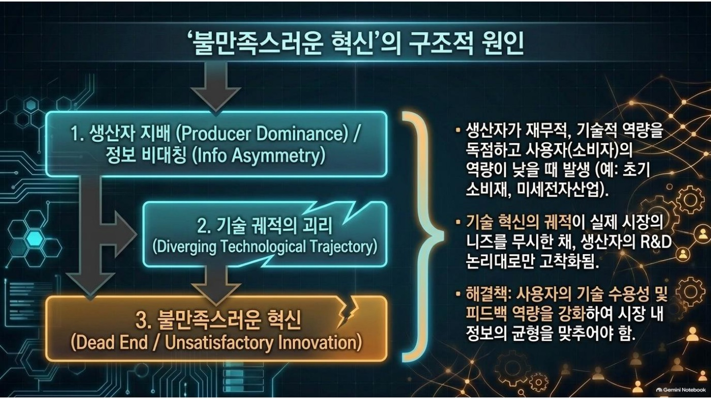
🗣 문제의 출발: "그럼 STI에 투자하면 되겠네"
"무게의 문제가 뭐냐 하면, '그래 그러면 STI한테 투자하면 되겠네'라는 생각을 사람들이 하는 거예요. 과학기술자한테 투자하면 당연히 성과가 나오겠다라고 생각을 하는 거. 그게 아니야. 산업이 과학을 끌고 가야 돼. 산업이 과학기술에 가서 자기가 필요한 거 갖다 써먹어야지, 무조건 과학기술 푸시한다고 산업이 되는 게 아니야."
56:58
"나라 입장에서는 그게 편하지. 연구자하고 하는 게 국장님도 그게 편하지. 현장에서는 우리가 그 바보 같은 짓을 계속하고 있는지도 몰라."
58:07
왜 정책은 자꾸 STI로 기우는가 — 측정하기 쉽고 상대하기 쉽기 때문이다. R&D 예산, 논문 수, 특허 수는 세기 쉽다. 반면 "현장 역량"은 세기 어렵다(→ W02-1/04가 그것을 세려 한 시도).
구조적 원인 3단계 📄 (슬라이드 p21)
1. 생산자 지배 (Producer Dominance) / 정보 비대칭 (Info Asymmetry)
↓
2. 기술 궤적의 괴리 (Diverging Technological Trajectory)
↓
3. 불만족스러운 혁신 (Dead End / Unsatisfactory Innovation)
| 단계 | 📄 내용 |
|---|---|
| ① 생산자 지배·정보 비대칭 | 생산자가 재무적·기술적 역량을 독점하고 사용자의 역량이 낮을 때 발생 (예: 초기 소비재, 미세전자산업) |
| ② 기술 궤적의 괴리 | 기술 혁신의 궤적이 실제 시장의 니즈를 무시한 채 생산자의 R&D 논리대로만 고착화됨 |
| ③ 불만족스러운 혁신 | Dead End |
| 해결책 | 사용자의 기술 수용성 및 피드백 역량을 강화하여 시장 내 정보의 균형을 맞춰야 함 |
사례
- 🗣 한국의 디지털 전환(DX): 정부가 돈을 많이 썼지만 잘 안 됐다. 현장에서는 왜 하는지 모르고, 소화할 역량이 없기 때문. 중견기업은 하지만 영세기업은 여력이 없다. AX도 같은 길을 갈 수 있다.
- 🗣 미국은 원래 "시장이 알아서 할 텐데 왜 정부가 R&D를 하냐"는 입장이었고, 하다 보니 의미 없는 특허만 만드는 사람들도 나왔다.
- 🗣 지금 한국·중국 시스템은 다 technology push, 공급 중심이다. ★
🗣 쓰는 사람의 관점: 유용/무용이 아니라 좋다/싫다 ★
"사용자 입장에서는 결국 '이거 아닌데', '이거 잘 모르겠는데', 심지어 GMO나 이런 것들은 '이거 싫어'. AI 데이터센터 '싫어'. 그러니까 이게 유용하고 안 유용하고가 아니고 좋다 싫다가 돼버리는 거예요. 이게 우리 라이프스타일 아니야."
1:00:43
- 🗣 유럽의 에어컨 논쟁: 유럽은 여름이 덥지 않아 에어컨이 없었는데 기후변화로 폭염이 왔다. 한국인은 "당연히 달아야지" 하지만 유럽에선 "왜 달아야 하냐"는 논쟁이 있다.
- 🗣 Frugal innovation vs Responsible innovation: 태양광·재활용 물이 있으면 매일 샤워해도 되나(재생에너지니까 마음껏), 아니면 그럼에도 절제해야 하나(responsible)? 둘 중 뭐가 옳으냐가 아니라 — 라이프스타일이 선택이 되고, 기술도 선택이 된다.
- → 이 대목이 W12 일상생활방식 접근(Social Practice)의 예고편이다. 소비는 효용 계산이 아니라 관습과 정체성의 문제.
핵심 문장 ★
- Mokyr는 접근 비용이 낮아지는 것을 좋은 일로만 봤다(W02-1/05).
- Lundvall은 그 속도가 사용자 역량을 앞지르면 오히려 dead end로 빨리 간다고 경고한다.
- 즉 두 사람은 같은 메커니즘(코드화 → 접근 비용 하락)을 반대 방향에서 본다. 이 대비가 퀴즈 비교형의 최적 소재.
수업에서 나온 논점
| W02 Q2 (김재원, 석유화학) | 위험은 다들 예측했지만 회사가 당장 단맛을 누리고 있으면 대비가 안 된다. 🗣 거버넌스·소유구조라는 다른 차원의 답. |
|---|---|
| W01 §6 GMO vs AI 데이터센터 | 유럽이 GMO를 반대하던 구도가 이제 미국이 AI 데이터센터를 반대하는 구도로 바뀌었다 — 🗣 "civic actor가 무엇을 원하느냐"가 같이 가야 한다. → W01/07. |
| W02 보충 [1:06:09] | 🗣 해 봐야 아는 것만 가지고 가면 안 되고 성찰적인 것, 메타 인지도 필요하다. |
보충 사례
- Lundvall (1985) Product Innovation and User-Producer Interaction이 이 논의의 원전. 덴마크 낙농 기계 산업의 사례 연구에서 출발했다 — 📄 슬라이드의 "낙농 공정" 예시가 여기서 온 것.
- 정부 DX 지원사업의 어려움 💡: 스마트공장 보급사업에서 설비는 들어갔지만 데이터를 읽고 공정을 바꿀 인력이 없어 활용률이 낮다는 지적이 반복돼 왔다. 🗣 "현장에서는 왜 하는지 모르고 소화할 역량이 없다"의 구체적 형태.
- Responsible Research and Innovation (RRI) 💡: EU가 제도화한 개념으로, 연구 초기 단계부터 사회적 가치·시민 참여를 반영하자는 접근. 🗣의 "responsible innovation"이 가리키는 흐름이며 W13 MOIP와 연결된다.
수업 프레임에서의 위치
- W02-1/05(Mokyr)의 대립항. 두 개념은 항상 세트로 다뤄야 한다.
- 처방은 W02-1/07(사용자–생산자 상호작용, 조직화된 시장)과 W02-1/12(결합 전략).
- W01/04의 "만드는 사람의 혁신 vs 쓰는 사람의 혁신"이 여기서 실패 메커니즘으로 구체화된다.
- "좋다/싫다"의 문제 제기는 W01/07 civic actor, W01/08 시민성, W12 Social Practice로 이어진다.
- 🗣 "한국·중국은 다 technology push"는 Korea Paradox(W01/04)의 또 다른 진단이다.
관련 개념 · 논문
- Lundvall (1985, 2016) — 🗣 사용자–생산자 상호작용, 불만족스러운 혁신. ★2016년 책
참고자료/PDF 보유. - 연결: W02-1/05 Mokyr · W02-1/07 사용자–생산자 상호작용 · W02-1/12 종합 · W01/04 · W01/07
예상 퀴즈 포인트
-
1
서술형★ 불만족스러운 혁신이란 무엇이며, 생산자 지배 → 기술 궤적의 괴리 → dead end로 이어지는 구조적 원인을 설명하라.
-
2
비교형★ "사용자의 수용성 변동 없이 지식 접근 비용만 낮아지는 것은 위험하다"의 뜻을 Mokyr의 주장과 대비해 서술하라.
-
3
서술형"산업이 과학을 끌고 가야 한다"는 주장의 근거와, 정책이 자꾸 technology push로 기우는 이유를 논하라.
-
4
서술형사용자 관점에서 기술 수용이 "유용/무용"이 아니라 "좋다/싫다"의 문제가 된다는 말의 함의를 사례(GMO, AI 데이터센터, 유럽 에어컨)로 설명하라.
-
5
서술형응용: 한국의 디지털 전환(DX) 정책이 불만족스러운 혁신의 사례가 될 수 있는 이유를 서술하라.
사용자–생산자 상호작용과 조직화된 시장
User-Producer Interaction and the Organized Market (Lundvall) — Learning by Interacting; Organized Market
출처
리딩
- Lundvall (1985) Product Innovation and User-Producer Interaction
- Lundvall (1992) National Systems of Innovation
수업노트
- 수업노트/W02_강의기록_260912.md §4-4 [1:04:16–1:05:50]
- 수업노트/W02_강의기록_260912.md §2-1 [30:21–34:00]
한 줄 정의
경제학 교과서의 시장은 가격이라는 숫자 하나만 오가는 곳이다. 그런데 현실의 시장에서는 "이거 써 보니 여기가 불편하더라", "그건 이렇게 쓰셔야 해요" 같은 말이 오간다. 이렇게 신뢰·관행·비공식 소통이 얹힌 시장을 조직화된 시장이라 하고, 여기서 일어나는 배움이 상호작용을 통한 학습(learning by interacting) — DUI의 'I'다.
쉽게 말하면
두 가지 단골집을 생각해 보자.
- 순수 시장: 자판기. 돈을 넣고 물건이 나온다. 자판기는 내가 왜 그 음료를 골랐는지 모르고, 나는 그 음료가 어떻게 만들어졌는지 모른다. 오가는 정보는 가격뿐.
- 조직화된 시장: 10년 다닌 동네 정육점. "오늘 뭐 해 드시게요?" "찌개요." "그럼 이 부위가 나아요." 사장님은 내 취향을 배우고, 나는 고기를 배운다.
혁신은 자판기에서 안 나오고 정육점에서 나온다. 🗣 "새로운 지식은 주고받는 상황에서 나오는 것이지 혼자 팍팍 나오는 게 아니에요."
핵심 내용
📄 슬라이드 (W02 p22–23)
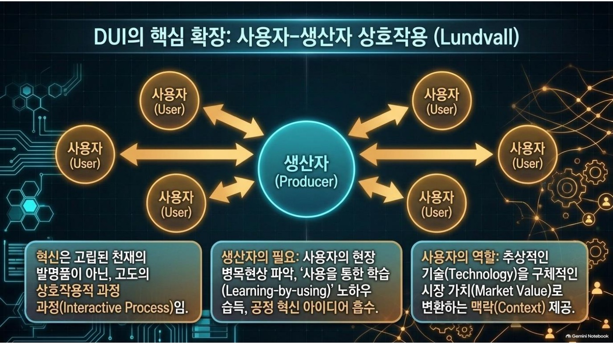
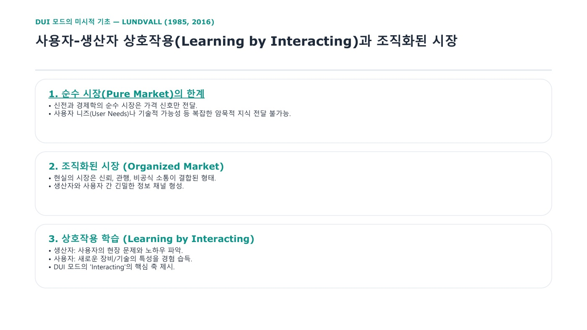
세 단계 논증 📄
① 순수 시장(Pure Market)의 한계
- 신고전파 경제학의 순수 시장은 가격 신호만 전달한다.
- 사용자 니즈(user needs)나 기술적 가능성 등 복잡한 암묵적 지식은 전달 불가능하다.
② 조직화된 시장(Organized Market)
- 현실의 시장은 신뢰, 관행, 비공식 소통이 결합된 형태.
- 생산자와 사용자 간 긴밀한 정보 채널이 형성된다.
③ 상호작용 학습(Learning by Interacting)
- 생산자: 사용자의 현장 문제와 노하우를 파악.
- 사용자: 새로운 장비·기술의 특성을 경험으로 습득.
- DUI 모드의 'Interacting'의 핵심 축.
📄 슬라이드 p22가 말하는 세 가지
| 내용 | |
|---|---|
| 혁신의 성격 | 혁신은 고립된 천재의 발명품이 아닌, 고도의 상호작용적 과정(Interactive Process)이다 |
| 생산자의 필요 | 사용자의 현장 병목현상 파악, '사용을 통한 학습(Learning-by-using)' 노하우 습득, 공정 혁신 아이디어 흡수 |
| 사용자의 역할 | 추상적인 기술(Technology)을 구체적인 시장 가치(Market Value)로 변환하는 맥락(Context) 제공 |
그림은 생산자 하나를 여러 사용자가 양방향 화살표로 둘러싼 형태다. 일방적 공급(technology push)이 아니라 다수의 양방향 채널이라는 점이 핵심.
🗣 수업에서의 설명
순수 시장은 가격 신호만 오간다고 보지만, 실제 시장은 그보다 훨씬 많이 주고받고 강한 네트워크와 관계 속에 있다 = 조직화된 시장.
1:04:16 전후
"새로운 지식은 주고받는 상황에서 나오는 것이지 혼자 팍팍 나오는 게 아니에요. … 진짜 자기 거가 되는 순간은, 뒤풀이에서 헛소리하는 친구가 '야 그건 아닌 것 같은데' 하고, '아니야 그거야' 하고, 그렇게 인터랙션 할 때."
31:48
- 🗣 그리고 이것이 시장에서 벌어지는 일이다. 이를 경제활동의 생산자–사용자 관계로 확장한 것이 국가혁신체제(NIS) 논의. → W01/09 계보의 출발점.
왜 이것이 W02-1/06의 처방인가 ★
- 불만족스러운 혁신의 원인은 생산자 지배와 정보 비대칭이었다.
- 조직화된 시장은 그 비대칭을 정보 채널로 메운다.
- 그래서 해결책이 "사용자의 기술 수용성 및 피드백 역량을 강화하여 시장 내 정보의 균형을 맞추는 것"이 된다.
- 즉 조직화된 시장은 묘사이자 처방이다. "현실 시장은 이렇다"이면서 "이렇게 만들어야 한다"이기도 하다.
수업에서 나온 논점
| W01 §9 Innovation Ecosystem의 social capital | 🗣 "밖에 두면서도 같이 갈 수 있게 하는 힘 = social capital. '같이 하자'는 신뢰가 있으면 법정으로 가지 않는다." → 조직화된 시장의 생태계 전략 버전. 신뢰가 거래비용을 대체한다는 같은 논리. |
|---|---|
| W01 §9 클러스터 | 🗣 클러스터·사이언스파크가 되는 이유는 집적만이 아니라 오랫동안 같이 일하며 쌓인 신뢰. → 조직화된 시장이 지리적으로 구현된 형태. |
| W02 Q4 (투자회사 참석자) | 상장사 이상 투자는 팀플레이이고 소싱도 조직(브랜드) 역량이 중요하다 — 개인이 연락해도 대기업 C레벨은 만나 주지 않는다. 💡 관계와 신뢰가 거래의 전제가 되는 또 다른 사례. |
보충 사례
- von Hippel의 lead user 💡: 가장 앞선 사용자가 스스로 제품을 개조해 쓰고, 그것이 나중에 상품이 된다는 연구. 스포츠 장비(마운틴바이크, 윈드서핑)가 대표 사례. 사용자가 "맥락 제공"을 넘어 직접 혁신 주체가 되는 경우로, W01/04의 프로슈머와 이어진다.
- 일본 계열(keiretsu)과 도요타 공급망 💡: 장기 거래 관계 속에서 부품사와 조립사가 설계 초기부터 함께 일한다(design-in). 가격만으로 매년 공급사를 바꾸는 방식보다 품질·원가 개선이 잘 된다는 것이 1980년대 연구들의 결론. 조직화된 시장의 산업 조직판.
- 한계 지적: 조직화된 시장은 신뢰가 있어 좋지만, 그만큼 닫힌 관계가 될 수 있다. 오래된 거래처와만 일하면 새 기술이 못 들어온다 — W01/05의 고착, W02-1/03의 DUI lock-in과 같은 위험. 🗣 W01 §9의 "long friendship을 가져가는 게 나을 수도 있다, 컨텍스트에 따라 다르다"가 이 긴장을 인정하는 대목.
수업 프레임에서의 위치
- W02-1/02(학습의 기본 메커니즘 = 상호작용)를 시장 이론으로 정식화한 것.
- W02-1/06(불만족스러운 혁신)의 처방.
- 이 개념이 확장되어 국가혁신시스템(NIS)이 된다 — W01/09 계보의 Innovation Studies 줄기 출발점.
- W01/01에서 던진 질문("경제활동은 collective decision-making인가?")에 대한 부분적 답: 시장은 1:1 계약의 합이지만, 조직화된 시장은 관계와 학습의 장이므로 단순한 계약의 합이 아니다.
- W02-2/03(Callon)과 통한다: 지식이 실제로 쓰이려면 텍스트만이 아니라 사람·장비·관계가 필요하다.
관련 개념 · 논문
- Lundvall (1985) Product Innovation and User-Producer Interaction — 원전.
- Lundvall (1992) National Systems of Innovation — NIS로의 확장.
- 연결: W02-1/02 학습 · W02-1/06 불만족스러운 혁신 · W01/01 · W01/11 Innovation Ecosystem
예상 퀴즈 포인트
-
1
비교형★ 순수 시장과 조직화된 시장의 차이를 설명하고, 순수 시장에서 혁신에 필요한 지식이 전달되지 못하는 이유를 서술하라.
-
2
서술형Learning by interacting에서 생산자와 사용자가 각각 무엇을 배우는가?
-
3
서술형"사용자는 추상적 기술을 시장 가치로 바꾸는 맥락을 제공한다"는 말의 뜻을 설명하라.
-
4
비교형비교형: 조직화된 시장이 불만족스러운 혁신(W02-1/06)의 처방이 되는 이유를 정보 비대칭 개념으로 설명하라.
-
5
서술형응용: 조직화된 시장의 강점(신뢰)이 동시에 약점(고착)이 될 수 있다. 이 긴장을 논하라.
생산 능력 vs 기술 역량
Production Capacity vs Technological Capabilities (Bell & Pavitt 1993) — Production Capacity vs Technological Capabilities — Bell & Pavitt (1993)
출처
리딩
- Bell & Pavitt (1993) Technological accumulation and industrial growth
- Linsu Kim (1997) Imitation to Innovation
수업노트
- 수업노트/W02_강의기록_260912.md §5-1 [1:06:49–1:08:53]
- 수업노트/W02_강의기록_260912.md §5-2 [1:08:53–1:16:09]
한 줄 정의
공장을 돌려 물건을 만드는 힘(생산 능력)과, 기술을 스스로 바꾸고 새로 만드는 힘(기술 역량)은 전혀 다른 것이다. 생산 능력은 돈으로 사 올 수 있지만, 기술 역량은 의도적인 학습 투자로만 쌓인다. 개도국이 공장을 아무리 많이 지어도 자동으로 혁신국가가 되지 않는 이유가 여기 있다.
쉽게 말하면
- 수면 위 = 생산 능력: 눈에 보이는 설비, 기계, 운영 노하우. 시장에서 사 올 수 있다.
- 수면 아래 = 기술 역량: 암묵지, 조직 구조, 혁신 관리 능력. 오직 의도적이고 누적적인 학습으로만 축적된다.
다른 비유로는, 최신 주방 설비를 통째로 사 온다고 미슐랭 셰프가 되지 않는 것과 같다. 설비는 돈이면 되지만, 새 메뉴를 개발하는 능력은 몇 년을 쌓아야 생긴다.
🗣 교수의 한마디: "capacity와 capability는 다르다."
핵심 내용
📄 슬라이드 (W02 p25–26)
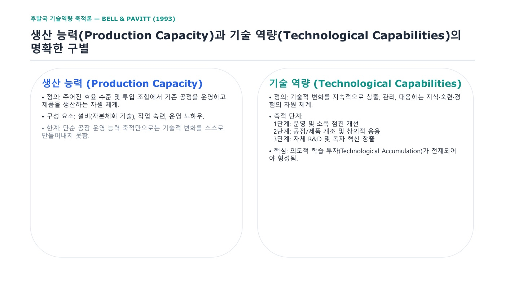
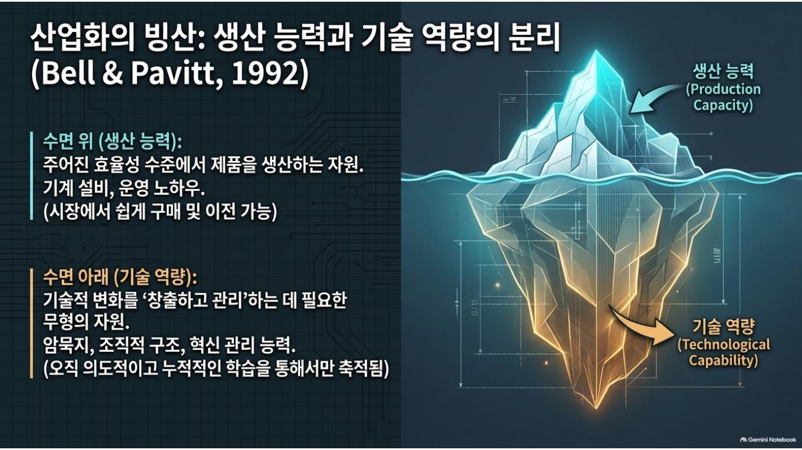
두 개념 비교 ★
| 생산 능력 (Production Capacity) | 기술 역량 (Technological Capabilities) | |
|---|---|---|
| 정의 | 주어진 효율 수준 및 투입 조합에서 기존 공정을 운영하고 제품을 생산하는 자원 체계 | 기술적 변화를 지속적으로 창출·관리·대응하는 지식·숙련·경험의 자원 체계 |
| 구성 | 설비(자본체화 기술), 작업 숙련, 운영 노하우 | 암묵지, 조직적 구조, 혁신 관리 능력 |
| 획득 방법 | 시장에서 쉽게 구매 및 이전 가능 | 의도적 학습 투자(technological accumulation)로만 형성 |
| 한계 | 단순 공장 운영 능력 축적만으로는 기술적 변화를 스스로 만들어내지 못한다 | — |
기술 역량의 3단계 축적 📄
| 1단계 | 운영 및 소폭 점진 개선 |
|---|---|
| 2단계 | 공정/제품 개조 및 창의적 응용 |
| 3단계 | 자체 R&D 및 독자 혁신 창출 |
→ W02-1/09의 후발국 역방향 궤적 3단계와 그대로 대응한다.
🗣 왜 이 개념이 한국 이야기의 출발점인가
"미시적 기초는 '해봐야 안다'이기 때문에 분명히 작동하는 것 같아. 그 아주 대표적인 예야, 한국의 경제. 얘네들 도대체 뭐야, 아무것도 없는데 도대체 어떻게 한 거야? … 우리는 조선시대는 경제 개념이 별로 없어요. 잉여의 축적. 사농공상, 상은 제일 격이 떨어지는 사람으로 취급받았을 사람이야. 그랬던 애들이 어떻게 이렇게 치고 올라온 거야, 놀라운 거지."
1:06:49
- 🗣 일본은 우리보다 100년 넘게 먼저 개항했고, 영주 시스템에서 늘 싸우느라 경제 개념이 있었다. 조선은 경제 개념(잉여의 축적)이 별로 없었다. 그런 나라가 치고 올라온 것.
- 🗣 암묵지의 축적이 산업 역량에 중요하다고 보는 사람들(Bell & Pavitt, Linsu Kim)에게 한국 케이스는 그 논리를 잘 증명해 주는 사례 — 과학자가 있어서가 아니라 매일 열심히 하니까 된다는 것.
🗣 울산과 부울경 — capacity는 있는데 capability가 없다 ★
"프로덕션 캐퍼시티가 있죠. 근데 그거를 케이퍼빌리티로 만드는 게 또 달라요. 그걸 업그레이드 시키는 거예요."
1:10:57
- 🗣 울산: 미야자키 만화(미래소년 코난)의 인더스트리아 같은 장관의 플랜트들. 생산 능력은 다 있다. 그런데 이를 capability로 업그레이드하는 것은 다른 일이며, 시설을 돌릴 사람·연구할 사람이 서울로 가 버린다. (UNIST가 앵커 역할 가능)
- 🗣 지역 구조 비교:
천안·아산·평택 수도권 규제로 서울 대학 분교가 생기고 인력 공급을 받으며 삼성·현대가 내려와 같은 생활권이 됨. 대전 40–50년 국가가 돈을 쏟아 겨우 바이오 성과. 오송·오창 산업단지 → 경부고속도로 코리도까지는 시장이 끌고 가는 힘이 있다. 부울경 생산 자산은 있는데 시장이 끌고 가는 동력이 없다.
🗣 "시장이 없으면 못 한다" ★
"시장이 없으면 못 합니다. 시장이 있어야 합니다. 우리는 마치 시장 없어도 그냥 이거 개발하고 막 이러면 절대 안 돼요. 시장이 있으니까 계속해서 수정을 하는 거예요. … 근데 그 와중에 봤더니 배 잘 만드는 나라가 몇 개 없어. 우리나라밖에 없는 거죠. 지금 부울경한테 기회가 왔다."
1:13:36
- 🗣 한국은 1990년대 이후 중국의 성장 옆에서 같이 컸고(중국 WTO 가입 2001), 그 전엔 냉전기 미국이 열어 준 시장에서 컸다.
- 🗣 중국이 따라잡아 막히는 와중에 미국이 중국을 배제하며 다시 시장을 잡아 주는 형국 — 배 만드는 나라가 우리밖에 없어 부울경에 기회가 왔다.
- 🗣 AX가 곧 기존 제조업 역량의 업그레이드 작업. 타겟을 잘 잡아야 한다.
"시장이 있으니까 계속 수정을 한다" — 시장은 판매처가 아니라 학습의 피드백 장치라는 뜻. W02-1/07의 조직화된 시장과 정확히 같은 논리.
🗣 R&D가 필요한 이유
장인들도 현장에서 어떻게 하면 잘할지 고민하지만, 그것을 더 체계적으로 하는 작업이 R&D. 데이터가 있으면 더 정확히 할 방법도 생겼다(Transformer를 구글이 만들고 NVIDIA GPU로 돌아가는 식).
수업에서 나온 논점
- ★ Term paper 후보 (수업노트 정제 노트에 표시): 부울경 제조업의 capacity → capability 업그레이드와 AX. 🗣가 여러 차례 강조한 주제이고 교수의 전공(지역혁신)과도 맞는다.
- W02-1/02 학습의 축적과 직결: "구매(기계, 인력)만으로 역량 획득이 되는 것은 아니다"가 곧 이 개념의 미시적 근거.
- W02-1/01 암묵지 단절: 🗣 "그 일은 사라진다" — 숙련자가 은퇴하면 기술 역량이 사라진다. 생산 능력(설비)은 남아도 역량은 증발한다.
보충 사례
- Bell & Pavitt (1993): 후발국이 자본재를 수입해 생산 능력을 키우는 것과, 기술 변화를 만들어 내는 역량을 키우는 것은 별개의 투자라고 주장했다. 💡 1960–70년대 많은 개도국이 공장을 지었지만 소수만 기술 역량으로 넘어갔다는 것이 실증적 배경. (슬라이드는 1992년, 널리 인용되는 판본은 1993년 Industrial and Corporate Change)
- Linsu Kim (1997) Imitation to Innovation: 한국 기업이 모방 → 흡수 → 개선 → 혁신으로 이동한 과정을 현대차·삼성 사례로 정리한 책. 🗣 "한국이 왜 성공했는지를 세계에 알린" 연구.
- 흡수역량(absorptive capacity, Cohen & Levinthal 1990): 외부 지식을 알아보고 소화해 활용하는 능력은 자체 R&D를 해 봐야 생긴다는 개념. "왜 R&D를 하는가"에 대한 또 다른 답이며, 기술 역량 논의와 짝을 이룬다.
수업 프레임에서의 위치
- 이 주차 후반부(미시적 기초의 확장)의 출발 개념. 학습(미시)이 국가 발전(거시)으로 연결되는 다리.
- W02-1/09(역방향 궤적) → W02-1/10(정책 프레임) → W02-1/11(수요 동인)으로 이어지는 한국 발전 서사의 1번.
- W01/04의 지역혁신(수도권 공화국) 문제의식이 여기서 부울경 사례로 구체화된다.
- 🗣 "시장이 없으면 못 한다"는 W02-1/11의 "공급·세제 이전에 수요"와 같은 주장의 다른 표현.
관련 개념 · 논문
- Bell & Pavitt (1993) — ★핵심. SPRU. 🗣 교수의 유학처이자 계보.
- Linsu Kim (1997) Imitation to Innovation — 🗣 언급.
- 연결: W02-1/02 학습 · W02-1/09 역방향 궤적 · W02-1/11 민간 R&D 수요 · W01/04
예상 퀴즈 포인트
-
1
비교형★ 생산 능력과 기술 역량을 정의하고 차이를 설명하라. 왜 전자는 구매 가능하고 후자는 불가능한가?
-
2
서술형기술 역량 축적의 3단계를 쓰고, 각 단계에서 기업이 하는 일을 설명하라.
-
3
서술형한국이 "아무것도 없는 상태"에서 성공한 것이 Bell & Pavitt의 논리를 증명한다는 말의 뜻을 서술하라.
-
4
서술형응용: 울산·부울경이 "생산 능력은 있으나 기술 역량 업그레이드가 어렵다"는 진단의 근거와, 그 해법으로 제시된 것을 논하라.
-
5
서술형"시장이 없으면 못 한다"는 주장을 학습의 피드백 관점에서 설명하라.
후발국의 역방향 기술 궤적
Reverse Technological Trajectory of Latecomers — Reverse technological trajectory
출처
리딩
- Linsu Kim (1997) Imitation to Innovation
- Bell & Pavitt (1993)
수업노트
- 수업노트/W02_강의기록_260912.md §5-3 [1:16:09–1:17:48]
한 줄 정의
선진국은 기초과학에서 시작해 산업으로 내려온다(Ω → λ, 정방향). 후발국은 반대로 간다 — 이미 성숙한 남의 기술을 뜯어 보며 만들어 보고(DUI), 그것을 다듬어 자기 것으로 만든 다음, 마지막에야 자체 R&D를 붙인다(λ → Ω, 역방향). 한국이 바로 이 길로 갔다.
쉽게 말하면
요리를 배우는 두 가지 순서다.
- 선진국(정방향): 조리 과학을 공부하고 → 레시피를 개발하고 → 식당을 연다.
- 후발국(역방향): 잘되는 식당 음식을 사다 먹어 보고 → 흉내 내 만들어 보고 → 내 입맛에 맞게 고치고 → 그제서야 왜 그런지 원리를 공부해 새 메뉴를 만든다.
역방향이 열등한 게 아니다. 이미 답이 나와 있는 영역에서는 훨씬 빠르다. 다만 앞서가는 순간부터는 정방향 능력(Ω)이 없으면 더 못 간다 — 그래서 3단계에서 STI를 결합해야 한다.
핵심 내용
📄 슬라이드 (W02 p27)
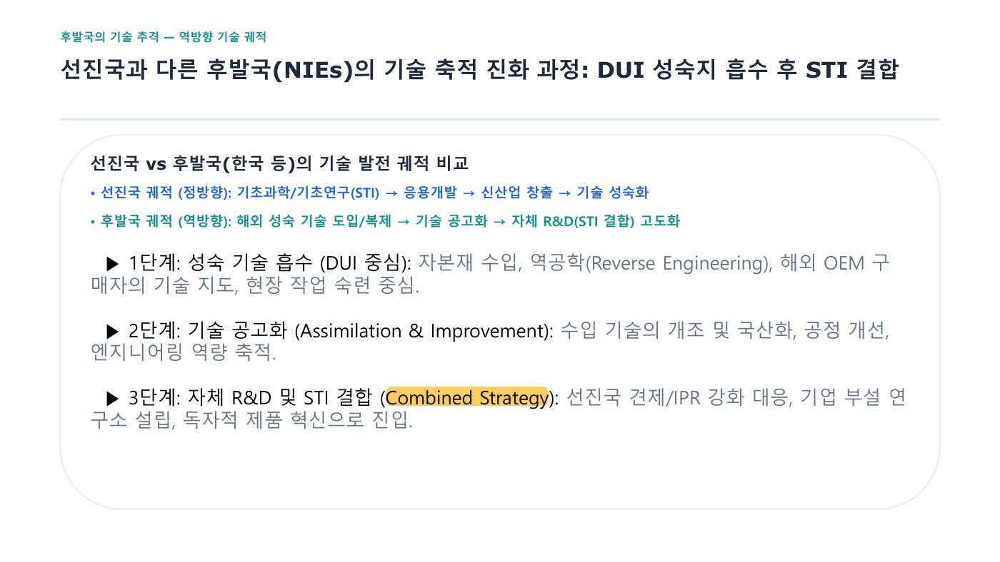
두 궤적 비교 ★
| 선진국 궤적 (정방향) | 후발국 궤적 (역방향) | |
|---|---|---|
| 순서 | 기초과학·기초연구(STI) → 응용개발 → 신산업 창출 → 기술 성숙화 | 해외 성숙 기술 도입/복제 → 기술 공고화 → 자체 R&D(STI 결합) 고도화 |
| 출발 지식 | Ω (명제적 지식) | λ (처방적 지식) |
| 주된 학습 모드 | STI | DUI → 나중에 STI 결합 |
3단계 📄
| 단계 | 내용 | 🗣 수업 설명 |
|---|---|---|
| 1단계: 성숙 기술 흡수 (DUI 중심) | 자본재 수입, 역공학(Reverse Engineering), 해외 OEM 구매자의 기술 지도, 현장 작업 숙련 중심 | 선진국 자동차를 사다가 뜯어 보고 만들어 보는 것. 맨땅에 헤딩 |
| 2단계: 기술 공고화 (Assimilation & Improvement) | 수입 기술의 개조 및 국산화, 공정 개선, 엔지니어링 역량 축적 | OEM(주문자 상표 부착)으로 시키는 대로만 하다가 → ODM(제조자 설계)으로 전환 |
| 3단계: 자체 R&D 및 STI 결합 | 선진국 견제·IPR 강화 대응, 기업 부설 연구소 설립, 독자적 제품 혁신으로 진입 | 기업 부설 연구소 설립, 독자 제품 혁신 |
🗣 삼성 특허의 변화 — 궤적의 증거 ★
- 초기 특허 대부분은 공정(process) 특허 — 남이 설계한 것을 어떻게 잘 만드느냐의 지식.
- 어느 정도 나온 뒤 제품(product) 특허로 이동 — 무엇을 만드느냐를 스스로 정하는 지식.
- → 기업 부설 연구소 설립, 독자 제품 혁신(STI 단계) 진입.
이 지표가 좋은 이유: 역량 단계의 이동을 특허 데이터로 관찰할 수 있다. Term paper에서 쓸 만한 측정 아이디어.
왜 3단계로 넘어가야 했나 — 밀려난 이유
- 즉 후발국이 자발적으로 R&D를 시작한 게 아니라, 역공학이 막혀서 할 수밖에 없었던 측면이 있다.
- → W02-1/11의 "민간 R&D 수요 창출 4대 동인" 중 ②번(IPR 강화로 역공학 차단)과 직결.
수업에서 나온 논점
- W02-1/05 Mokyr와의 대비: Mokyr는 영국에서 "산업이 있고 거기에 과학을 끌어다 썼다"고 했다. 🗣 이 말은 사실 역방향 궤적과 닮았다 — 영국도 λ가 먼저 있었다. 차이는 누가 그 Ω를 만들었느냐다(영국은 자국 과학자, 후발국은 수입).
- W02 Discussion (p31): 🗣 20세기 한국의 전략은 추격전략(Catching-up), 21세기 전략은? STI mode와 DUI mode? Something else? → 역방향 궤적의 끝에서 다음 길을 묻는 질문. W01/04 Korea Paradox와 같은 질문의 다른 얼굴.
보충 사례
- 현대자동차: 1970년대 포드와의 조립 생산에서 시작해 1975년 포니(이탈디자인 설계, 미쓰비시 엔진)로 독자 모델을 냈고, 1991년 알파 엔진으로 자체 파워트레인에 도달했다. 💡 도입 → 공고화 → 자체 개발의 교과서적 경로. 🗣 W01 §10 Discussion 6번의 "개발국가 시대 현대자동차 전략을 생태계론으로 재구성"이 이 사례를 가리킨다.
- OEM → ODM → OBM 💡: 수업에서는 OEM→ODM까지 나왔는데, 보통 그 다음 단계로 OBM(Own Brand Manufacturing, 자체 브랜드)을 놓는다. 삼성·LG가 자체 브랜드로 넘어간 것이 이 단계. 대만 기업(폭스콘 등)이 ODM에 머문 것과 대비된다.
- 역방향 궤적의 한계: 앞선 기술을 따라갈 때는 목표가 분명해서 자원을 몰아줄 수 있다(W01/05의 "잘하는 애한테 몰아주기"). 그러나 프론티어에서는 목표 자체가 불확실해 그 방식이 안 통한다. 🗣 "프론트에서는 그게 안 먹혔어요. 다양성이 중요한데."
수업 프레임에서의 위치
- W02-1/08(생산 능력 → 기술 역량)의 시간적 전개. 3단계가 그대로 대응한다.
- W02-1/05(Mokyr의 정방향)와의 대비를 통해 후발국의 특수성을 드러낸다.
- W02-1/10–11(정책 프레임과 수요 동인)이 이 궤적을 정부가 어떻게 밀었는가로 이어진다.
- W01/05의 개발국가 멘탈리티 문제와 연결: 역방향 궤적에서 성공한 방식이 고착되어 프론티어에서 걸림돌이 된다.
관련 개념 · 논문
- Linsu Kim (1997) Imitation to Innovation — 한국의 3단계 경로 연구.
- Bell & Pavitt (1993) — 역량 축적 단계론.
- 연결: W02-1/05 Mokyr · W02-1/08 생산능력 vs 기술역량 · W02-1/10 수요–공급–연계 · W02-1/12 종합
예상 퀴즈 포인트
-
1
비교형★ 선진국의 정방향 궤적과 후발국의 역방향 궤적을 비교하고, 후발국 3단계를 설명하라.
-
2
서술형역방향 궤적의 1단계에서 DUI가 중심이 되는 이유는? (역공학, OEM 기술지도, 현장 숙련)
-
3
서술형삼성 특허가 공정 특허에서 제품 특허로 이동한 것이 무엇을 의미하는가?
-
4
서술형후발국이 3단계(자체 R&D)로 넘어가게 된 외부 압력은 무엇인가?
-
5
서술형응용: 20세기 추격 전략이 21세기에 통하지 않는 이유를 고착·다양성 개념으로 논하라. (Discussion 문제)
수요–공급–연계 기술정책 프레임
Demand / Supply / Linkage Policy Framework (Kim & Dahlman 1992) — Kim & Dahlman (1992)
출처
리딩
- Kim & Dahlman (1992) Technology policy for industrialization
- Evans (1995) Embedded Autonomy
수업노트
- 수업노트/W02_강의기록_260912.md §5-4 [1:17:48–1:24:15]
한 줄 정의
정부의 기술정책을 세 가지로 나누는 틀이다. 공급 정책은 역량·인력·연구소를 직접 만들어 주고, 수요 정책은 "이걸 만들면 팔린다"는 시장 니즈를 만들어 주며, 연계 정책은 둘이 만나도록 세제·금융으로 촉매 역할을 한다. 한국의 성공은 이 세 가지를 발전 단계에 따라 바꿔 가며 썼기 때문이다.
쉽게 말하면
농사에 비유하면,
- 공급 정책 = 씨앗과 농기구를 대 준다 (KIST 설립, 인력 양성, 자본재 수입)
- 수요 정책 = "수확하면 내가 다 사 줄게"라고 판로를 만들어 준다 (공공조달, 국산화 지정, 수출 진흥)
- 연계 정책 = 농사짓는 데 필요한 돈을 싸게 빌려주고 세금을 깎아 준다 (R&D 세액공제, 우대금융)
핵심은 순서다. 씨앗만 나눠 주고 팔 곳이 없으면 아무도 농사를 안 짓는다. 그래서 W02-1/11의 결론이 "공급·세제 이전에 수요"가 된다.
핵심 내용
📄 슬라이드 (W02 p28)
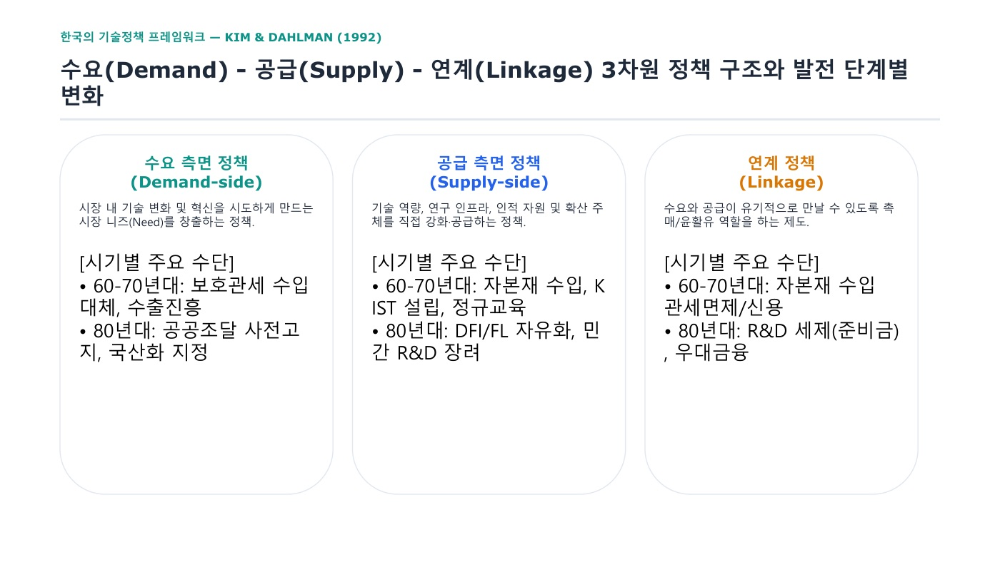
세 정책의 정의와 시기별 수단 ★
| 수요 측면 (Demand-side) | 공급 측면 (Supply-side) | 연계 (Linkage) | |
|---|---|---|---|
| 정의 | 시장 내 기술 변화·혁신을 시도하게 만드는 시장 니즈(Need)를 창출하는 정책 | 기술 역량, 연구 인프라, 인적 자원 및 확산 주체를 직접 강화·공급하는 정책 | 수요와 공급이 유기적으로 만나도록 촉매/윤활유 역할을 하는 제도 |
| 60–70년대 | 보호관세, 수입 대체, 수출 진흥 | 자본재 수입, KIST 설립, 정규교육 | 자본재 수입 관세면제/신용 |
| 80년대 | 공공조달 사전고지, 국산화 지정 | DFI/FL 자유화, 민간 R&D 장려 | R&D 세제(준비금), 우대금융 |
시기별로 읽으면 흐름이 보인다. 60–70년대는 국가가 직접 만들어 주는 단계(KIST, 자본재), 80년대는 민간이 하도록 유인하는 단계(민간 R&D 장려, 세제). 국가의 역할이 생산자에서 설계자로 이동한다.
🗣 핵심은 "경쟁을 시킨 것" ★
"결국은 경쟁을 시킨 거예요. 우리 국내 시장은 보호해 줄게, 대신에 수출을 해서 성과를 내. 이게 왜 작동했느냐. 옛날에는 돈이 없었어요. … 정주영 회장이 영국의 바클레이 뱅크 찾아갔을 때 거북선 지폐 보여주고서 '우리는 배 만들 줄 아니까 돈 달라'고 얘기했어. 일단은 펀딩이 중요했는데 그 펀딩을 누가 해줬냐, 정부가. '펀딩 해줄 테니까 이거 이거 해.' 그게 개발국가의 잔재가 아직도 남았어. 모피아라는 얘기가 나왔어."
1:18:35
- 보호 + 수출 성과 요구의 결합이 핵심. 보호만 하면 나태해지고, 개방만 하면 살아남지 못한다. 🗣 국내는 보호하되 국제 시장에서 성과를 증명하게 했다.
- 🗣 왜 정부가 필요했나: 돈이 없었기 때문. 벤처도 결국 펀딩 문제이고, 그 펀딩을 정부가 해 줬다. 그 잔재가 모피아(재경부가 펀딩을 다 쥐고 있었으니). 대신 수출 잘하면 법인세 등으로 돌아온다.
- 🗣 중국 버전: 지방정부끼리 싸움을 붙인다. 공유자전거도 경쟁시켜 1·2등만 남기고 3·4·5등이 망하면서 자전거 쓰레기가 산더미.
🗣 관료의 자율성과 embedded autonomy ★
- 🗣 박정희의 철권통치에도 불구하고, 남미 같았으면 딴짓을 했을 텐데 관료들이 그렇게 딴짓을 안 했다.
- 🗣 IMF 이후 정경유착(crony capitalism)으로 욕을 먹었고 외환은행 매각 같은 건수도 있지만, 상당 기간 관료들은 철저하게 경쟁으로 배분했다 — 공정에 대한 감수성이 높았다.
- 🗣 Peter Evans(버클리)는 이를 embedded autonomy(배태된 자율성)라 불렀다.
"서구에서는 국가를 믿지 않아요. 저렇게 세금 내서 하면 다들 자기 삥땅 칠 거다. 그 때문에 국가 시스템이 작동 잘 안 한다. … 삥땅을 친다는 게 뭐냐 하면 사적 이익한테 캡처된다는 얘기. 펀딩을 제일 잘하는 애한테 주는 게 아니고 나랑 친한 애들, 아니면 나한테 돈을 많이 주는 사람한테 주는. 근데 우리는 그렇지는 않았단 말이죠. 철저하게 경쟁을 통해 했다는, 공정에 대한 감수성이 굉장히 높은 거죠."
1:22:59
embedded autonomy의 두 축: embedded(산업계와 긴밀히 연결되어 무엇이 필요한지 안다) + autonomy(그러면서도 특정 기업에 포획되지 않는다). 둘 중 하나만 있으면 실패한다 — 연결만 있으면 정실주의, 자율만 있으면 탁상행정.
수업에서 나온 논점
- W02 Q6 (Korea Paradox): 김재원이 🗣 embedded autonomy를 타다 사례와 연결. "장기적으로 밀고 가는 정부의 방향성이 모자라지 않나." 🗣 교수: 타다는 자본과 국가의 싸움이었고, 미국 택시는 고급 서비스·한국 택시는 대중 서비스라 부문(sectoral) 성격의 충돌이 있었다. →
수업노트/W02 §6 Q6 - W01/05 개발국가 멘탈리티: 이 정책 프레임이 성공했기 때문에 그 멘탈리티에서 못 벗어난다는 것이 고착 논의의 출발점.
보충 사례
- Kim & Dahlman (1992): Linsu Kim(고려대)과 Carl Dahlman(세계은행)이 한국 사례를 정리한 논문. 💡 세계은행 계열의 "동아시아 기적" 논쟁 속에서 나온 작업이라, 시장 친화적 개입이라는 틀로 한국을 설명하려는 맥락이 있다.
- Evans (1995) Embedded Autonomy: 한국·대만·브라질·인도·자이르를 비교해, 국가 관료제의 성격이 산업화 성패를 갈랐다고 논증한 책. 💡 반대 극단인 "약탈국가(predatory state)"의 예로 자이르를 든다. W14 개발국가 주차의 핵심 배경 이론.
- 수요 정책의 현대판: 임무지향 혁신정책(MOIP, W13)이 하는 일이 정확히 수요 창출이다. 정부가 "2030년까지 이 문제를 푼다"고 선언하고 조달로 시장을 만들어 준다. 즉 이 프레임은 옛날 이야기가 아니라 지금 정책 논쟁의 언어다.
수업 프레임에서의 위치
- W02-1/09(역방향 궤적)를 정부가 어떻게 밀었는가로 설명하는 정책 층위.
- W02-1/11(민간 R&D 수요 창출 4대 동인)이 이 프레임의 "수요가 핵심"이라는 결론을 뒷받침한다.
- W01/06의 세 실패 프레임과 대조하면 흥미롭다: 이 시기 한국은 시장 실패·시스템 실패 처방을 잘 썼다. 전환 실패(방향성·수요 표출·조율) 프레임은 지금의 과제.
- W14 개발국가 주차의 직접적 배경. embedded autonomy가 그때 본격적으로 다뤄진다.
관련 개념 · 논문
- Kim & Dahlman (1992) — 📄 세 정책 프레임.
- Evans (1995) Embedded Autonomy — 🗣 언급. W14 관련.
- 연결: W02-1/09 역방향 궤적 · W02-1/11 민간 R&D 수요 · W01/04 · W01/06 세 가지 실패
예상 퀴즈 포인트
-
1
비교형★ 수요·공급·연계 정책을 각각 정의하고, 한국의 60–70년대와 80년대 수단을 비교하라.
-
2
서술형"국내 시장은 보호해 줄게, 대신 수출해서 성과를 내"라는 정책 조합이 왜 작동했는지 설명하라.
-
3
서술형★ Embedded autonomy란 무엇이며, 한국 관료제가 "사적 이익에 포획되지 않았다"는 평가의 근거는?
-
4
비교형비교형: 시기별 정책 수단의 변화(국가가 직접 만들어 주기 → 민간이 하도록 유인하기)가 기술 역량 단계와 어떻게 대응하는가?
민간 R&D 수요 창출 4대 동인
Four Determinants of Private R&D Demand in Korea — 왜 한국 기업은 R&D를 시작했나
출처
리딩
- Kim & Dahlman (1992)
수업노트
- 수업노트/W02_강의기록_260912.md §5-4 [1:17:48–1:24:15]
한 줄 정의
정부가 R&D 보조금과 세금 혜택을 준다고 기업이 연구를 시작하지는 않는다. "혁신하지 않으면 죽는다"는 시장 압력이 먼저 생겨야 한다. 한국에서 민간 R&D가 폭발한 이유는 ① 경쟁 압력, ② 역공학 차단, ③ 정부의 구매 약속, ④ 세제·금융의 촉매 — 이 순서였다. 📄 "공급이나 세제 지원 이전에 '혁신하지 않고는 생존할 수 없는' 시장 경쟁 압력이 핵심."
쉽게 말하면
헬스장 회원권을 공짜로 준다고 운동하지 않는다. 그런데 건강검진에서 위험 신호가 나오면(①), 좋아하던 배달음식이 끊기면(②), 회사가 체력검정을 예고하면(③) 운동을 시작한다. 이때 회원권 할인(④)이 마지막 한 방을 더한다.
한국 기업도 같았다. 80년대에 임금이 오르고, 중국·동남아가 싸게 치고 올라오고, 선진국이 기술을 안 주기 시작하자 "이대로는 죽는다"가 됐다. 그때 정부의 세제 지원이 불을 붙였다.
핵심 내용
📄 슬라이드 (W02 p29)
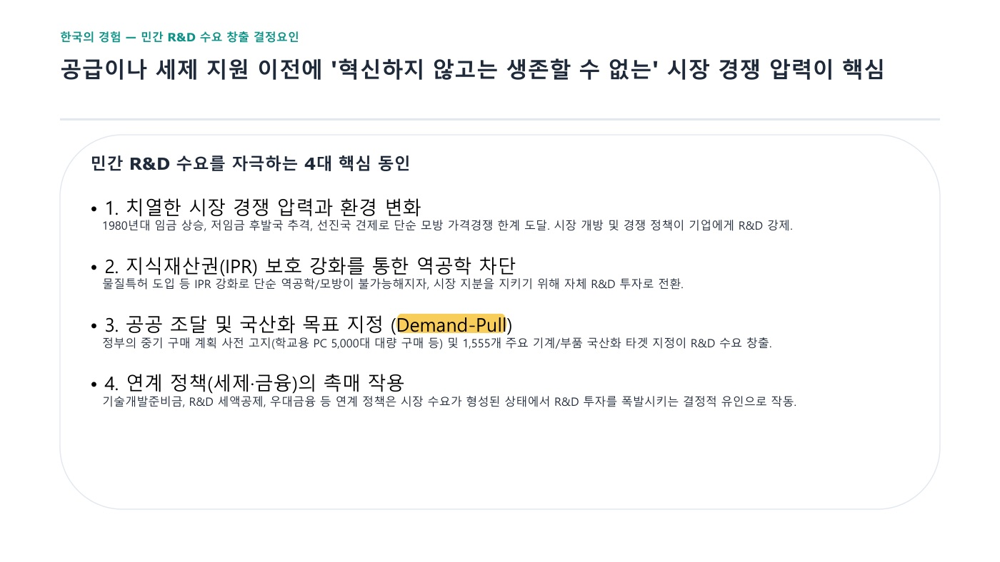
4대 동인 ★
| # | 동인 | 📄 내용 |
|---|---|---|
| ① | 치열한 시장 경쟁 압력과 환경 변화 | 1980년대 임금 상승, 저임금 후발국 추격, 선진국 견제로 단순 모방 가격경쟁이 한계에 도달. 시장 개방 및 경쟁 정책이 기업에게 R&D를 강제 |
| ② | 지식재산권(IPR) 보호 강화를 통한 역공학 차단 | 물질특허 도입 등 IPR 강화로 단순 역공학·모방이 불가능해지자, 시장 지분을 지키기 위해 자체 R&D 투자로 전환 |
| ③ | 공공 조달 및 국산화 목표 지정 (Demand-Pull) | 정부의 중기 구매 계획 사전 고지(학교용 PC 5,000대 대량 구매 등) 및 1,555개 주요 기계/부품 국산화 타겟 지정이 R&D 수요 창출 |
| ④ | 연계 정책(세제·금융)의 촉매 작용 | 기술개발준비금, R&D 세액공제, 우대금융 등은 시장 수요가 형성된 상태에서 R&D 투자를 폭발시키는 결정적 유인으로 작동 |
핵심 논리: 순서가 중요하다 ★
- ①②③이 수요를 만들고, ④가 촉매로 작동한다.
- ④를 먼저 하면? → 세금은 깎이는데 R&D는 안 늘어난다. 💡 "R&D 세액공제를 늘렸는데 왜 효과가 없나"라는 정책 논쟁의 전형적 답이 여기 있다.
- 🗣 W02-1/08의 "시장이 없으면 못 한다"와 정확히 같은 주장.
①번 동인을 뜯어보면 — 세 방향의 압박
1980년대 한국 기업이 동시에 맞은 세 가지 압력:
| 위에서 | 선진국이 기술 이전을 막고 견제 |
|---|---|
| 아래에서 | 저임금 후발국이 가격으로 추격 |
| 안에서 | 임금 상승으로 원가 우위 상실 |
→ 💡 이 협공을 벗어나는 유일한 출구가 기술 차별화였다. 즉 R&D는 선택이 아니라 생존 조건이 됐다.
②번이 역설적인 이유
- W02-1/09에서 후발국 1단계의 핵심 수단이 역공학이었다.
- IPR 강화는 그 수단을 막은 것이다.
- 즉 후발 전략을 봉쇄당한 것이 자체 R&D의 계기가 됐다. 억압이 전환을 만든 셈.
- 이는 오늘날에도 반복된다. 미국의 대중국 반도체 수출 통제가 중국의 자체 개발을 가속하는 구조와 같다. 🗣 W02 Q2에서 나온 중국 에틸렌 자립(2018–19년 60% 수입 → 거의 100% 자립)도 같은 패턴.
③번 Demand-Pull의 구체성
- 중요한 것은 사전 고지다. "앞으로 몇 년간 이만큼 산다"를 미리 알려 주면 기업이 투자 계산을 할 수 있다. 불확실성을 정부가 흡수해 준 것.
- → W13 임무지향형 혁신정책(MOIP)의 조달 기반 수요 창출과 같은 논리. 🗣 W02-1/10 참조.
수업에서 나온 논점
- W02 Q6 (Korea Paradox): 🗣 "국가가 R&D에 돈을 집어넣을 줄은 알았지, 나오는 걸 어떻게 소화할지에 대해서는 어떤 생각을 갖고 있느냐." → 과거에는 ①②③(수요)이 있었는데, 지금은 ④(투입)만 크고 수요 설계가 약한 것 아닌가라는 진단으로 읽을 수 있다. ★ 퀴즈에서 W01 Korea Paradox와 엮기 좋은 지점.
- W02-1/06 불만족스러운 혁신과 연결: 🗣 "지금 한국·중국 시스템은 다 technology push, 공급 중심이다." 4대 동인 논리는 정확히 그 반대(demand-pull)를 말한다.
보충 사례
- 물질특허 도입: 💡 한국은 1986년 미국의 통상 압력(슈퍼 301조 등) 속에서 물질특허 제도를 도입했다. 그 전까지 제약·화학 분야는 제법만 다르게 하면 같은 물질을 만들 수 있었는데, 이것이 막히면서 국내 제약사들이 신약 개발로 방향을 틀게 된다. ②번의 대표 사례.
- TDX(전전자교환기) 개발: 💡 1980년대 정부가 통신 수요를 보장하고 ETRI와 민간 기업이 함께 개발한 사례. 정부 조달이 수요를 만들고 그 위에서 기술 역량이 쌓인 ③번의 전형.
- 반론도 알아 둘 것: "수요가 먼저"라는 이 설명은 정부의 역할을 시장 조성자로 그린다. 반대 진영은 한국의 성공이 정부 개입 때문이 아니라 거시 안정과 개방 덕이라고 본다(세계은행 계열의 시장 친화적 해석). 어느 쪽을 택하든 근거를 들어 쓰면 된다.
수업 프레임에서의 위치
- W02-1/10(세 정책 프레임)의 결론부. 세 정책 중 무엇이 먼저인가에 대한 답.
- W02-1/12(종합)의 두 기둥 중 하나("수요–공급–연계 정책의 균형").
- W01/04 Korea Paradox와 W01/06 전환 실패의 실증적 연결고리. 과거의 성공 공식(수요 설계)이 지금 작동하는지를 묻게 한다.
- W13 MOIP에서 이 논리가 현대적으로 부활한다.
관련 개념 · 논문
- Kim & Dahlman (1992) — 📄 출처.
- 연결: W02-1/10 정책 프레임 · W02-1/09 역방향 궤적 · W02-1/12 종합 · W01/04 Korea Paradox
예상 퀴즈 포인트
-
1
서술형★ 민간 R&D 수요를 창출한 4대 동인을 쓰고, 각각을 설명하라.
-
2
서술형★ "공급이나 세제 지원 이전에 시장 경쟁 압력이 핵심"이라는 주장의 근거를 서술하라. 세제 지원을 먼저 하면 왜 효과가 없는가?
-
3
서술형IPR 강화가 후발국의 자체 R&D를 촉발한 메커니즘을 설명하라. (역공학 차단의 역설)
-
4
서술형공공조달의 사전 고지가 왜 기업의 R&D 투자를 유도하는가?
-
5
서술형응용: 이 4대 동인 프레임으로 현재 한국의 AI·반도체 상황을 진단하면 무엇이 부족한가? (Korea Paradox와 연결)
종합 — 지식 모드의 결합과 수요 중심 정책
Synthesis — Complementary Combination of STI/DUI and Demand-oriented Policy — 이 주차의 결론과 Discussion
출처
리딩
- Jensen et al. (2007)
- Kim & Dahlman (1992)
수업노트
- 수업노트/W02_강의기록_260912.md §5-5 [1:24:15–1:27:50]
한 줄 정의
이 주차의 결론은 두 문장이다. ① 지식 모드는 결합해야 한다 — 하이테크는 R&D(STI)에 현장 학습(DUI)을 붙이고, 전통 제조업은 현장 노하우(DUI)에 과학 지식(STI)을 붙여야 한다. ② 정책은 수요·공급·연계가 균형을 이뤄야 하고, 발전 단계에 따라 동적으로 바뀌어야 한다.
쉽게 말하면
이 주차 전체를 한 문장으로 줄이면 🗣 교수의 말이 된다. "해 봐야 안다." 그런데 여기에 단서가 붙는다. 해 보기만 해서는 그 자리에 갇힌다. 해 본 것을 말과 글로 옮겨야 남에게 전해지고, 그때 로직(과학)이 들어온다.
"몸으로 알고 다 하는 것들을 다른 사람들하고 공유하려면 말로 해야 되고 글로 써야 되는데, 말로 하고 글로 쓸 때는 과학적인 지식이 들어오는 거죠. … 지역에서 점 보는 사람들이 얘기하는 스타일을 옮길 수가 없잖아요. 로직이 있어야 되는 거잖아."
1:25:28
핵심 내용
📄 슬라이드 (W02 p30–31)
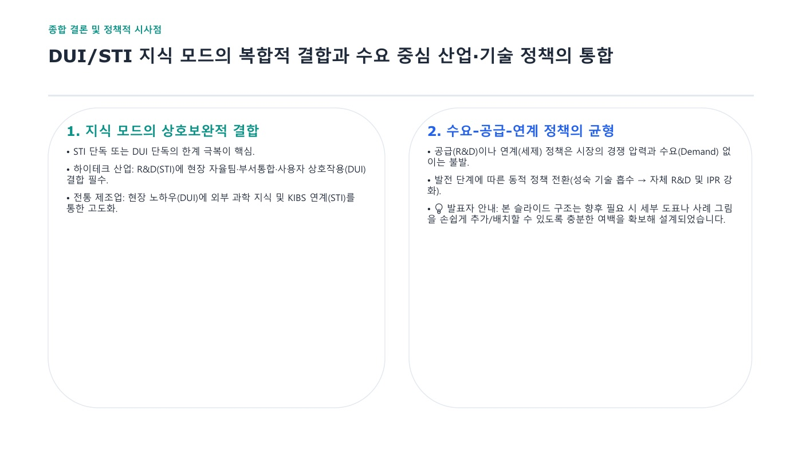
결론 ① 지식 모드의 상호보완적 결합 ★
| 산업 유형 | 가진 것 | 붙여야 할 것 | 📄 구체적 방법 |
|---|---|---|---|
| 하이테크 산업 | R&D (STI) | DUI | 현장 자율팀·부서통합·사용자 상호작용 결합 필수 |
| 전통 제조업 | 현장 노하우 (DUI) | STI | 외부 과학 지식 및 KIBS 연계를 통한 고도화 |
KIBS (Knowledge-Intensive Business Services, 지식집약 비즈니스 서비스) = 엔지니어링, 설계, IT, 컨설팅 등 다른 기업에 지식을 공급하는 서비스업. 중소 제조업체가 자체 R&D 조직을 갖기 어려울 때 외부에서 STI를 빌려 오는 통로가 된다.
🗣 한국 현장에 대한 진단
- 🗣 전통 제조업은 공정부터 배웠기 때문에 DUI가 발달 — 현장을 꿰뚫고 있는 '빠꼼이'가 회사마다, 군대에도 있다. 그 사람들을 AX 등으로 업그레이드하는 작업이 필요하다.
- 🗣 국제 경쟁은 임금 경쟁(중국은 싸다) → 우리는 생산성을 높이고 새 제품을 만드는 경쟁을 해야 하며, 그때 DUI와 STI를 결합해야 한다.
- 🗣 (나중에 Lundvall 관련해 dynamic capability 같은 얘기도 할 것.)
결론 ② 수요–공급–연계 정책의 균형 ★
- 공급(R&D)이나 연계(세제) 정책은 시장의 경쟁 압력과 수요(Demand) 없이는 불발.
- 발전 단계에 따른 동적 정책 전환 (성숙 기술 흡수 → 자체 R&D 및 IPR 강화).
→ W02-1/10, W02-1/11의 결론을 그대로 받는다.
두 결론이 사실 하나인 이유 💡
- 결합(①)과 수요(②)는 다른 얘기처럼 보이지만 같은 구조다.
- STI만 밀면 불만족스러운 혁신(W02-1/06)이 되고, 공급만 밀면 정책이 불발된다(W02-1/11).
- 양쪽 모두 "쓰는 쪽을 보라"는 하나의 주장이다. 현장 사용자(DUI)를 보라는 것과 시장 수요(demand)를 보라는 것은 층위만 다를 뿐 같은 말이다.
- ★ 퀴즈에서 이 연결을 쓸 수 있으면 답안의 수준이 올라간다.
📄 Discussion (p31) ★
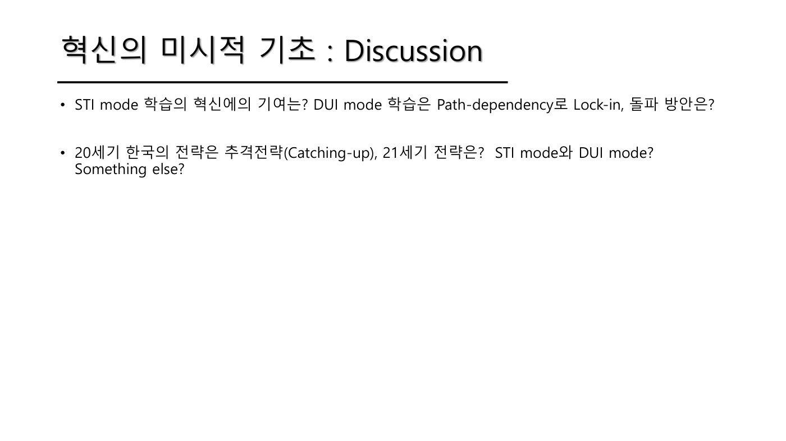
Q1. STI mode 학습의 혁신에의 기여는? DUI mode는 Path-dependency로 Lock-in되는데 돌파 방안은?
- 🗣 DUI는 path-dependency로 lock-in될 가능성이 높다 — 새로운 세계를 못 볼 수 있다.
- 답을 만들 실마리:
- STI의 기여 = 단절적(radical) 혁신과 전파 가능성(다른 현장으로 이전). W02 Q2에서 나온 원자폭탄 예시.
- 돌파 방안 = ① 외부 지식 유입(KIBS, 연구기관 협력) ② 🗣 메타 인지("해 봐야 아는 것만 가지고 가면 안 된다") ③ W01 Q5의 🗣 조직 바깥 태스크포스(DARPA 방식) ④ 인력 순환.
Q2. 20세기 한국의 전략은 추격전략(Catching-up), 21세기 전략은? STI mode와 DUI mode? Something else?
- 🗣 W01 §5: "잘하는 애한테 몰아주면 뭔가 나온다"는 추격에는 먹혔지만 프론티어에서는 안 먹힌다. 다양성이 중요하다.
- 🗣 W02 Q6: "우리는 왜 AI를 먼저 못 만들었을까?" 거꾸로 생각하면 이 정도 하니까 지금 수준인지도 모른다. 그럼에도 질문은 해야 한다.
- → W01/04 Korea Paradox, W01/05 고착, W01/06 전환 실패와 모두 연결되는 열린 질문. Term paper 주제로도 유력.
수업에서 나온 논점
| W02 보충 [1:06:09] | 🗣 현장에 계신 분들은 더 잘 안다. 해 봐야 아는 것만 가지고 가면 안 되고 성찰적인 것, 메타 인지도 필요하다. 그 메타 인지를 얻으려고 학교에 와서 듣는 것. → Q1의 돌파 방안에 대한 교수 본인의 답. |
|---|---|
| W02 Q5 (김태훈) | 🗣 태스크포스를 조직 바깥에 따로 만들어라. DARPA처럼. 계속 안에서 하면 절대 안 된다. 탑다운 시스템의 장점이 바로 이것. → DUI lock-in 돌파의 조직적 처방. |
| W02 Q3 | 🗣 빨리 움직이는 동네에서는 구조를 만들면 잘 워킹하지 않는다. 반면 공군·방산처럼 한 번에 세게 가는 곳은 리뷰 시스템이 필요. 조직 성격에 따라 다르다. → 처방이 하나가 아님을 보여 주는 대목. |
보충 사례
- Dynamic capability (Teece 1997): 🗣 교수가 예고한 개념. 변화하는 환경에서 자원을 재배치·재구성하는 상위 역량. 감지(sensing) → 포착(seizing) → 재구성(reconfiguring)의 세 축으로 나눈다. 💡 DUI의 lock-in을 깨는 능력을 경영학 언어로 옮기면 이것에 가깝다.
- KIBS의 역할 💡: 유럽 연구들은 중소 제조업체가 혁신할 때 대학보다 엔지니어링·설계 서비스 기업과의 거래가 더 큰 영향을 준다고 본다. "산학협력"보다 "산-서비스업 협력"이 현실적 경로일 수 있다는 함의.
- 결합이 어려운 이유: STI와 DUI는 평가 기준과 시간 지평이 다르다. 연구소는 논문·특허로 평가받고 현장은 수율·납기로 평가받는다. 그래서 물리적으로 붙여 놓아도 대화가 안 된다. Jensen et al.의 결합 클러스터가 18.8%뿐인 이유이기도 하다.
수업 프레임에서의 위치
- W02-1 전체의 결론 파일. 앞의 11개 개념이 여기로 수렴한다.
- 전반부(01–07 지식과 학습) + 후반부(08–11 한국 발전)를 하나로 묶는다.
- Discussion Q2("21세기 전략은?")는 학기 전체를 관통하는 질문으로, W14 개발국가·W15 신시민성까지 이어진다.
- ★ 퀴즈 1(9/19) 범위의 마지막 개념. 서술형에서 "이 주차를 요약하라"류가 나오면 이 파일이 답안의 뼈대가 된다.
관련 개념 · 논문
- Jensen et al. (2007), Kim & Dahlman (1992) — 두 결론의 근거.
- Teece (1997) dynamic capability — 🗣 예고.
- 연결: W02-1/03 STI/DUI · W02-1/04 실증 · W02-1/06 불만족스러운 혁신 · W02-1/11 4대 동인 · W01/04 Korea Paradox · W01/05 세 가지 고착
예상 퀴즈 포인트
-
1
서술형★ 하이테크 산업과 전통 제조업이 각각 어떤 지식 모드를 보완해야 하는지 설명하라. KIBS의 역할은?
-
2
서술형★ "지식 모드의 결합"과 "수요 중심 정책"이 결국 같은 주장인 이유를 설명하라.
-
3
서술형★ DUI mode의 lock-in을 돌파하는 방안을 세 가지 이상 제시하고 근거를 서술하라. (Discussion Q1)
-
4
서술형★ 20세기 추격 전략이 21세기에 통하지 않는 이유와 대안을 논하라. (Discussion Q2)
-
5
서술형이 주차 전체를 "해 봐야 안다"는 명제로 요약하고, 그 명제의 한계와 보완을 서술하라.